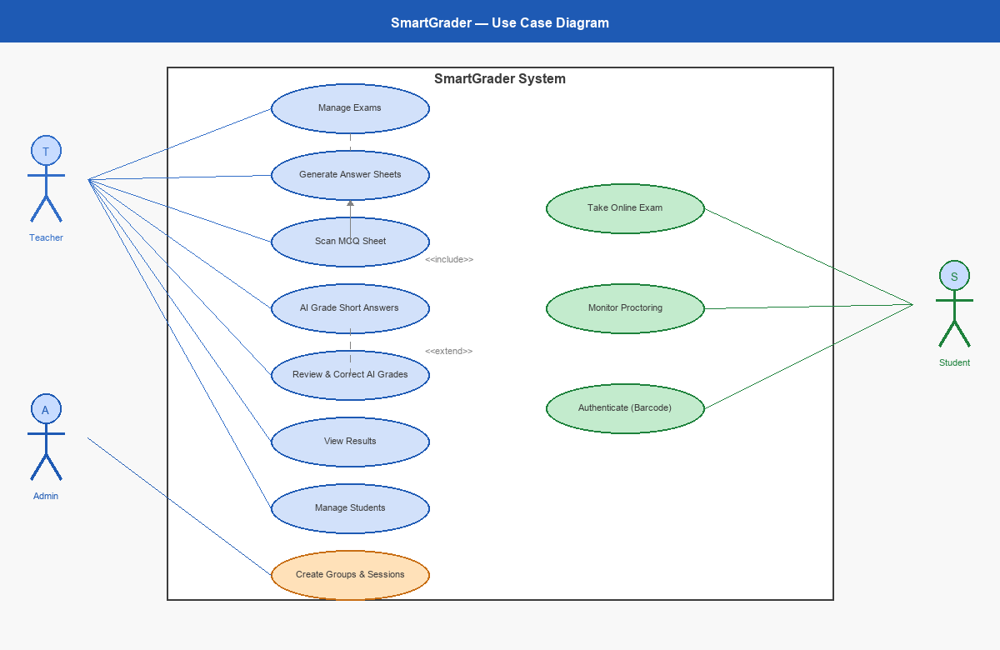
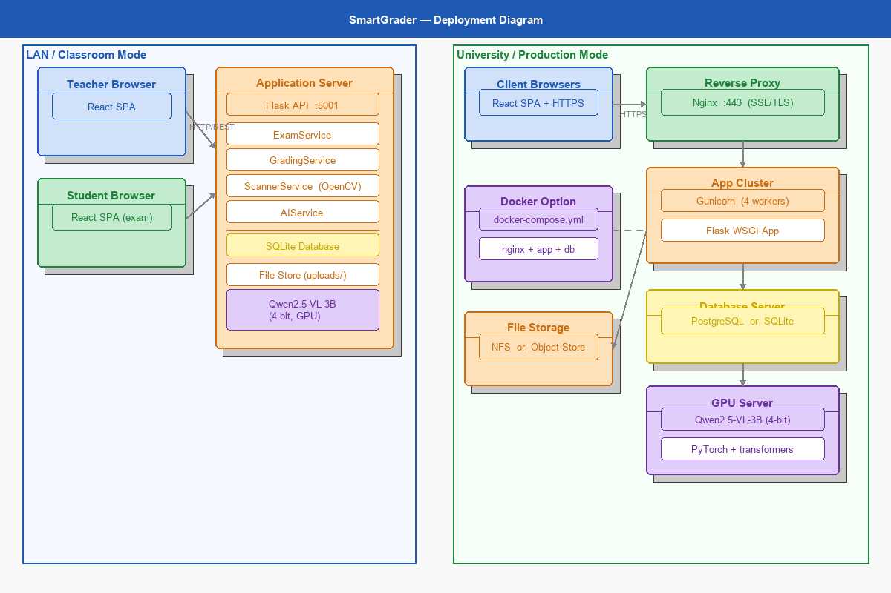
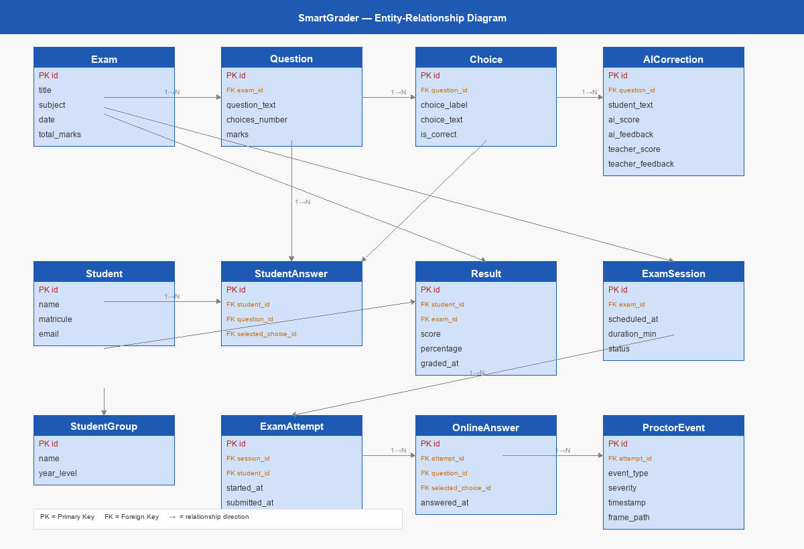
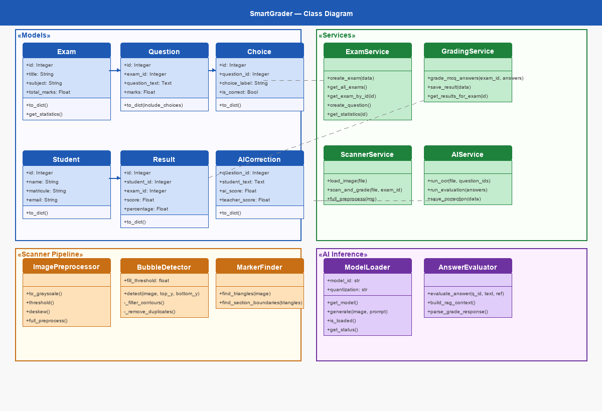
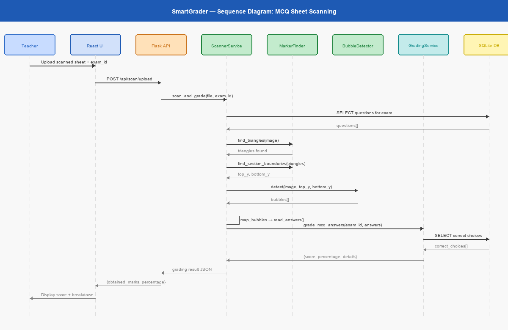
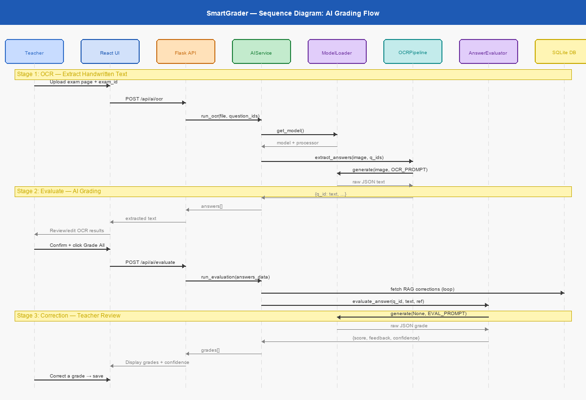

People's Democratic Republic of Algeria
Ministry of Higher Education and Scientific Research
University Name, Department of Computer Science
Faculty of Sciences and Technology
Department of Computer Science
End-of-Studies Project (PFE)
For the degree of Master in Computer Science
Speciality: Software Engineering
|
Presented by: Student Name |
Supervised by: [Supervisor Name] |
Academic Year 2026
This thesis presents SmartGrader, a web-based platform for creating, managing, and automatically grading academic exams. The system supports both multiple-choice questions (MCQ) via optical mark recognition and short written answers via an integrated vision language model (Qwen2.5-VL-3B-Instruct). Built with a layered architecture using Flask, React, SQLAlchemy, and OpenCV, SmartGrader demonstrates how modern AI can assist educators in reducing manual grading workload while maintaining accuracy through a human-in-the-loop feedback mechanism. The system supports trilingual handwriting recognition (French, Arabic, English) and improves over time through a retrieval-augmented generation (RAG) feedback loop based on teacher corrections.
Keywords: OMR, OCR, Vision Language Model, Exam Grading, Flask, React, RAG
The evaluation of student performance through written examinations remains one of the most critical activities in educational institutions worldwide. In Algerian universities and secondary schools alike, instructors routinely administer paper-based examinations ranging from multiple-choice questionnaires (MCQs) to short-answer and open-ended questions. The subsequent grading of these examinations is a labour-intensive process that places a significant burden on teaching staff, particularly in large-enrolment courses where a single instructor may be responsible for evaluating hundreds of answer sheets within a constrained time frame.
Manual grading suffers from several well-documented shortcomings. First, it is inherently time-consuming: an instructor grading a thirty-question MCQ examination for a class of two hundred students must inspect and tally six thousand individual responses, a task that can easily consume an entire working day. Second, human fatigue introduces inconsistency and error. Studies in educational measurement have consistently shown that grader reliability diminishes over extended marking sessions, leading to discrepancies that can disadvantage students whose papers happen to be evaluated later in the process. Third, the lack of a standardised digital record means that grading data is difficult to aggregate, analyse, or revisit, limiting the capacity of institutions to perform systematic quality assurance on their assessment processes.
The advent of Optical Mark Recognition (OMR) technology partially addressed the first of these problems by enabling the automated reading of bubble-sheet answer forms. Commercial OMR systems such as Remark Office OMR, GradeCam, and ZipGrade have gained adoption in certain educational contexts, offering rapid processing of MCQ examinations. However, these solutions present their own limitations. Many are proprietary and carry non-trivial licensing costs that place them beyond the reach of publicly funded Algerian institutions. More critically, they are restricted to the MCQ format and offer no capability for evaluating free-text or short-answer responses, which constitute a substantial proportion of university-level assessments.
Beyond grading, the traditional model of paper-based, in-person examinations presents additional challenges as educational institutions seek to expand access and continuity of assessment. The need for simultaneous physical presence, supervised examination rooms, and manual sheet distribution creates logistical constraints that are particularly acute for large institutions or distributed student populations. Online examination platforms offer a partial solution, but widely deployed systems such as Moodle Quiz, Google Forms, and ExamSoft each present limitations in terms of academic integrity, deployment flexibility, or integration with existing institutional infrastructure.
Recent advances in artificial intelligence, and in particular the emergence of Vision Language Models (VLMs) and browser-based machine learning frameworks, have opened new possibilities for automating both the evaluation of handwritten student responses and the real-time monitoring of online examination integrity. Models such as Qwen2.5-VL and LLaVA are capable of jointly processing visual and textual information, enabling them to read handwritten text directly from scanned examination sheets and to assess the semantic correctness of student answers against a reference rubric. Simultaneously, frameworks such as TensorFlow.js enable the deployment of face detection and behaviour analysis models directly within the browser, providing a basis for non-invasive academic integrity monitoring without requiring server-side video processing.
It is within this context that the SmartGrader project was conceived: a comprehensive, open-source examination management platform that unifies MCQ scanning through computer vision, AI-assisted evaluation of short-answer questions, a fully integrated online examination engine with real-time proctoring capabilities, and flexible deployment modes including local LAN, university server, and containerised cloud environments, all delivered through a modern web interface accessible to any instructor or student with a standard browser.
The central problem addressed by this project can be formulated as follows:
How can we design and implement an integrated system that automates the grading of both multiple-choice and short written-answer examinations, supports fully online examination delivery with real-time academic integrity monitoring, leverages computer vision for optical mark recognition and vision language models for handwriting recognition and semantic evaluation, and remains flexibly deployable on a range of hardware configurations from a single local machine to a university-wide server infrastructure?
This problem encompasses several interrelated challenges. The system must reliably detect and interpret filled bubbles on printed answer sheets under varying scan quality and lighting conditions. It must accurately recognise handwritten student responses in multiple languages, including Arabic and French. It must evaluate the semantic correctness of free-text answers against instructor-provided model answers and grading criteria. It must support the delivery of online examinations with session management, timer control, and answer persistence. It must monitor student behaviour during online examinations using browser-based face detection and event tracking without requiring server-side video storage. Finally, it must present all of these capabilities through an intuitive user interface that requires no specialised technical knowledge to operate, and it must be deployable across a range of infrastructure configurations suited to the resource constraints of Algerian educational institutions.
The project pursues the following principal objectives:
Restructure the legacy codebase into a clean, layered architecture. The initial prototype of SmartGrader was developed as a monolithic desktop application with tightly coupled components. The first objective is to refactor this codebase into a well-structured Flask-based backend following the Model-Service-Route pattern, with clear separation of concerns between data access, business logic, and presentation layers.
Build a modern web user interface replacing the desktop application. The second objective is to develop a responsive, accessible frontend application using React, Vite, Tailwind CSS, and the shadcn/ui component library, providing instructors with a browser-based interface for managing examinations, scanning answer sheets, reviewing grading results, and administering online examinations.
Integrate a vision language model for handwriting OCR and AI-assisted grading. The third objective is to incorporate the Qwen2.5-VL-3B-Instruct model, quantised to 4-bit precision for deployment on consumer-grade GPUs, to perform optical character recognition on handwritten responses and to evaluate them against model answers. A RAG-based feedback loop enables the system to learn from teacher corrections over time.
Implement a fully online examination engine with role-based access control. The fourth objective is to build a complete online examination subsystem comprising JWT-based authentication with teacher and student roles, student group management, exam session scheduling, a timed student-facing exam interface with answer persistence and auto-submission, and a real-time teacher monitoring dashboard.
Develop a browser-based anti-cheat and proctoring system. The fifth objective is to implement a hybrid anti-cheat system that employs TensorFlow.js and the BlazeFace model for in-browser face presence detection, browser event tracking (tab switching, fullscreen exit, copy-paste events), periodic webcam snapshot capture, and a teacher-facing proctoring dashboard that aggregates all integrity signals with warning escalation.
Support flexible deployment configurations. The sixth objective is to ensure that SmartGrader can be deployed as a single-machine development server, as a LAN-accessible institutional service (Gunicorn + Nginx), as a Docker-containerised application, and with SSL/TLS termination and hardened CORS policies appropriate for production environments.
Produce formal academic documentation. The seventh objective is to deliver a complete set of project documentation, including UML design diagrams, a comprehensive test suite, and this thesis document, meeting the standards expected of a final-year graduation project.
The development of SmartGrader followed an incremental methodology, structured around four sequential phases:
Phase 1: Authentication and Role Management. The foundation was extended with a JWT-based authentication system supporting teacher and student roles, barcode-based student login, and CSV bulk import of student accounts. This phase established the security perimeter and the role-based access control model upon which subsequent phases depend.
Phase 2: Online Examination Engine. A complete online examination subsystem was built on top of the authenticated backend. This phase introduced student group management, exam session scheduling and assignment, a student-facing timed examination interface with persistent answer drafting and auto-submission on timer expiry, and a teacher monitoring dashboard for real-time session oversight.
Phase 3: Anti-Cheat and Proctoring. A browser-native proctoring layer was integrated into the student examination interface. The ProctorEngine runs TensorFlow.js with the BlazeFace model to detect face presence at configurable intervals. Browser events including tab switching, fullscreen exit, visibility changes, and copy-paste attempts are tracked and reported. Periodic webcam snapshots are transmitted to the server and associated with the examination attempt. A warning escalation system automatically terminates the attempt after a configurable number of integrity violations. A dedicated proctoring dashboard allows teachers to review all events and snapshots for each student.
Phase 4: Deployment and Infrastructure. The application was prepared for production deployment across multiple target environments: LAN mode for classroom or departmental use (Gunicorn serving the Flask application, Nginx acting as a reverse proxy), university server mode with SSL/TLS certificates and hardened CORS policies, and Docker Compose for portable containerised deployment. Environment-specific configuration, health check endpoints, and startup scripts were provided for each deployment mode.
Each phase was developed on an isolated Git branch, with integration into the main branch occurring only after successful completion of all unit and integration tests. The test suite grew from an initial 56 tests to 191 tests across all phases, providing comprehensive regression protection at each stage of development.
The remainder of this thesis is organised as follows:
Chapter 2: State of the Art surveys the existing literature and commercial solutions relevant to the SmartGrader project. It reviews established OMR systems, online examination platforms, computer vision techniques for document analysis, the emerging family of vision language models, browser-based face detection frameworks, handwriting recognition approaches, JWT authentication, and retrieval-augmented generation. The chapter concludes with an expanded comparative synthesis and an identification of the gaps that SmartGrader aims to fill.
Chapter 3: Analysis and Design presents the requirements analysis and system design. It defines the functional and non-functional requirements for all four phases, describes the extended system architecture using UML diagrams, details the database schema including all new tables introduced for authentication, session management, and proctoring, specifies the full REST API, presents the authentication architecture with JWT flow, and describes the online examination and anti-cheat system designs.
Chapter 4: Implementation describes the technical realisation of the system across all four phases. It covers the development environment and tools, the backend implementation (authentication middleware, online exam engine, proctoring event service), the anti-cheat frontend implementation (ProctorEngine with BlazeFace, event tracking, snapshot capture), and the deployment configurations for each target environment.
Chapter 5: Testing and Results presents the testing methodology and empirical results. It reports on the automated test suite covering 191 tests across all modules, evaluates MCQ scanning accuracy, assesses AI grading performance, and reports on the online examination and proctoring subsystems including timing and performance benchmarks.
Chapter 6: Conclusion and Perspectives summarises the achievements of all four phases, acknowledges current limitations, and proposes directions for future work.
This chapter surveys the existing literature, technologies, and commercial solutions relevant to the automated grading and online administration of examinations. We begin by reviewing established Optical Mark Recognition systems, then examine online examination platforms and their limitations. We proceed to discuss online proctoring solutions, browser-based face detection frameworks, and the JWT authentication standard. We then survey the computer vision techniques that underpin document analysis, review the emerging family of Vision Language Models and their application to handwriting recognition, and introduce Retrieval-Augmented Generation as a mechanism for improving model accuracy. The chapter concludes with an expanded comparative synthesis and an identification of the gaps that motivate the SmartGrader project.
Optical Mark Recognition (OMR) refers to the process of capturing human-marked data from document forms such as surveys and tests, where respondents indicate their answers by filling in bubbles, checkboxes, or similar marks. OMR technology has been employed in educational assessment for several decades and remains the dominant approach to automated MCQ grading.
Remark Office OMR, developed by Gravic Inc., is one of the longest-established commercial OMR solutions. It processes scanned images of custom-designed answer sheets and supports a wide range of form layouts. The software provides statistical analysis features and can export results to common data formats. However, Remark requires a proprietary software licence with costs that can exceed several hundred dollars per seat, and it operates exclusively on the Windows platform. Its form design tool, while flexible, demands significant initial configuration effort.
GradeCam [@gradecam2024] offers a distinctive approach to OMR by enabling teachers to grade bubble sheets using a standard document camera or even a smartphone camera, eliminating the need for a dedicated scanner. The system processes images in real time and provides immediate feedback. GradeCam integrates with popular Learning Management Systems and offers a cloud-based interface. Its primary limitation lies in its subscription-based pricing model, which imposes recurring costs on institutions, and its restriction to multiple-choice and simple numeric response formats.
ZipGrade [@zipgrade2024] is a mobile-first OMR application that transforms a smartphone into a portable grading device. Teachers print standardised answer sheets, and students fill in their responses using pencil. The teacher then scans each sheet using the ZipGrade mobile application, which processes the image and records the score. ZipGrade is notable for its accessibility and ease of use, but it is limited to MCQ formats with a maximum of 100 questions per sheet. The free tier restricts the number of scans per month, and the platform offers no support for handwritten answer evaluation.
Moodle, the open-source Learning Management System, includes a built-in Quiz module that supports a variety of question types including multiple-choice, short answer, and essay questions. While Moodle can automatically grade MCQ and exact-match short-answer questions, it requires manual intervention for evaluating free-text responses. Moodle operates entirely in the digital domain and does not support the scanning of paper-based examinations, making it unsuitable for institutions that rely on traditional paper-and-pencil testing.
The following table summarises the key characteristics of the reviewed OMR systems:
| Criterion | Remark OMR | GradeCam | ZipGrade | Moodle Quiz |
|---|---|---|---|---|
| MCQ support | Yes | Yes | Yes | Yes |
| Short-answer support | No | No | No | Partial (exact match) |
| Handwriting OCR | No | No | No | No |
| AI-based grading | No | No | No | No |
| Open source | No | No | No | Yes |
| Paper-based scanning | Yes | Yes | Yes | No |
| Pricing | Licence fee | Subscription | Freemium | Free |
| Platform | Windows | Web/Mobile | Mobile | Web |
As the table illustrates, none of the existing systems combine paper-based MCQ scanning with AI-assisted evaluation of handwritten short-answer responses. This gap constitutes a primary motivation for the SmartGrader project.
Online examination platforms deliver assessments through web browsers, eliminating the need for physical answer sheets. This section reviews the principal platforms in this category and their respective limitations.
Beyond its use with paper-based assessments, Moodle's Quiz module is widely deployed for online examinations in university settings. It supports a broad range of question types (multiple-choice, true/false, short answer, essay, matching, numerical) and provides configurable timing, shuffled questions, and multiple attempts. Moodle is open-source, making it free for institutions to deploy, and its plugin ecosystem provides extensions for additional question types and integrations. Its principal limitations in the online examination context are its monolithic architecture, which demands significant server resources, and its dependence on a separate LMS installation rather than operating as a standalone examination tool. Moodle's native anti-cheat capabilities are also limited, relying primarily on question shuffling and time limits rather than active proctoring.
Google Forms provides a free, cloud-hosted survey and quiz tool that is widely used for informal online assessments. Its simplicity and zero-configuration deployment make it attractive for small classes, but it lacks the academic rigour required for formal examinations: there is no identity verification, no session control, no time-per-question enforcement, and no proctoring mechanism of any kind. Results are stored in Google Sheets, and integration with institutional student information systems is absent.
ExamSoft is a dedicated secure examination platform widely used in professional education (law schools, medical schools) and higher education. The Examplify desktop client locks down the student's computer during the examination, disabling access to the internet, local files, and other applications. ExamSoft supports rich question types including audio and video stimuli and provides detailed analytics. However, ExamSoft is a proprietary, subscription-based platform with per-seat or per-exam pricing that places it out of reach for publicly funded Algerian institutions. Its lockdown client requires installation on the student's personal computer and does not support browser-based delivery.
| Criterion | Moodle Quiz | Google Forms | ExamSoft | SmartGrader |
|---|---|---|---|---|
| MCQ support | Yes | Yes | Yes | Yes |
| Timed sessions | Yes | No | Yes | Yes |
| Auto-submit on timeout | Yes | No | Yes | Yes |
| Student groups | Yes | No | Yes | Yes |
| Role-based access | Yes | No | Yes | Yes |
| Open source | Yes | No | No | Yes |
| Paper scanning | No | No | No | Yes |
| AI grading | No | No | No | Yes |
| Browser-based proctoring | No | No | No | Yes |
| Self-hosted | Yes | No | No | Yes |
| Pricing | Free | Free | Subscription | Free |
Academic integrity in online examinations is enforced through proctoring technologies that monitor student behaviour during the examination session. This section surveys the principal approaches.
ProctorU is a human-assisted remote proctoring service in which a live proctor observes the student via webcam and screen share throughout the examination. The proctor can communicate with the student through a chat interface and can flag suspicious behaviour. While ProctorU provides a high level of monitoring confidence, it is expensive (charged per examination session), requires scheduling in advance, and raises privacy concerns due to the transmission of live video to a third-party service. It also requires a stable, high-bandwidth internet connection that may not be available to all Algerian students.
Respondus LockDown Browser is a custom browser that prevents students from navigating to other websites, opening other applications, or capturing screenshots during an examination. It integrates with Moodle, Canvas, and Blackboard. The companion Respondus Monitor product adds webcam recording and automated behavioural analysis. LockDown Browser requires installation on the student's machine and is not available as a browser extension or progressive web app, limiting its deployment flexibility. The recorded video is uploaded to Respondus servers for post-hoc review, raising data sovereignty concerns.
Proctorio is a browser extension-based proctoring solution that intercepts webcam, microphone, and screen data during an examination and applies automated analysis algorithms to detect suspicious behaviour. It integrates with major LMS platforms and provides risk scores based on gaze direction, audio activity, and window focus changes. Proctorio has been controversial due to privacy concerns: it records students' faces and environments, stores data on cloud servers, and has been the subject of academic freedom debates. Its automated risk scores have also been criticised for false positives, particularly for students with disabilities or those taking examinations in non-standard environments.
| Criterion | ProctorU | Respondus Monitor | Proctorio | SmartGrader |
|---|---|---|---|---|
| Live human proctor | Yes | No | No | No |
| Webcam monitoring | Yes | Yes | Yes | Yes (snapshots) |
| Browser lockdown | No | Yes | Partial | Yes (fullscreen) |
| Tab-switch detection | No | No | Yes | Yes |
| Face detection | Human | Automated | Automated | TF.js BlazeFace |
| Server-side video | Yes | Yes | Yes | No (snapshots only) |
| Privacy-preserving | No | No | No | Yes (local) |
| Open source | No | No | No | Yes |
| Requires installation | No | Yes | Extension | No |
| Cost | Per session | Subscription | Subscription | Free |
A key distinguishing feature of SmartGrader's approach is that it performs all face detection locally in the browser using TensorFlow.js, transmitting only discrete snapshots rather than continuous video streams. This significantly reduces privacy exposure and bandwidth requirements compared to server-side proctoring systems.
The feasibility of running real-time face detection directly within a web browser, without any server-side computation, has been established by the emergence of WebGL-accelerated machine learning frameworks.
TensorFlow.js [@tensorflowjs2024] is a JavaScript library that enables the training and deployment of machine learning models entirely within the browser using WebGL for GPU acceleration. It provides a high-level API for model inference, supports the conversion of TensorFlow SavedModels and Keras models to the TensorFlow.js format, and offers a set of pre-trained models through the @tensorflow-models package family. TensorFlow.js achieves inference latencies of tens to hundreds of milliseconds for compact models on modern hardware, making real-time face detection feasible at examination-relevant frequencies (one check per second or faster).
MediaPipe [@mediapipe2024], developed by Google, is a cross-platform framework for applying ML pipelines to media streams. Its FaceMesh and Face Detection solutions provide real-time face tracking in the browser via a WebAssembly backend. MediaPipe face detection offers sub-10-millisecond latency for a single face on modern hardware and provides rich facial landmark data including eye gaze estimation and head pose. Its primary limitation is the larger package size compared to BlazeFace, which increases initial page load time.
BlazeFace [@blazeface2019] is a lightweight face detection model originally developed by Google for mobile devices. It detects faces using a single-shot approach with anchor-based regression, achieving real-time performance on mobile CPUs (less than 2 ms per frame). In TensorFlow.js, BlazeFace is available through the @tensorflow-models/blazeface package and requires approximately 300 KB of model weights. It is optimised for front-facing, near-field scenarios such as a student looking at a laptop webcam — exactly the use case required for examination proctoring. SmartGrader employs BlazeFace through TensorFlow.js for its low weight, fast inference, and suitability for the examination monitoring context.
| Model | Package Size | Inference Latency | Face Landmarks | Gaze Estimation | Suitable for Exam Proctoring |
|---|---|---|---|---|---|
| BlazeFace (TF.js) | ~300 KB | < 2 ms | Minimal | No | Yes |
| MediaPipe Face Detection | ~2 MB | < 10 ms | Yes | No | Yes |
| MediaPipe FaceMesh | ~4 MB | ~5 ms | 468 points | Estimated | Yes (advanced) |
| face-api.js | ~6 MB | ~10-30 ms | 68 points | No | Yes |
SmartGrader selects BlazeFace for its minimal footprint and fast inference, which allows face presence checks to run at 1-second intervals without perceptible impact on examination performance.
Authentication is a foundational requirement for any multi-user web application. This section reviews the JWT standard and its applicability to the SmartGrader context.
JSON Web Tokens (JWT), standardised in RFC 7519 [@rfc7519], are a compact, URL-safe means of representing claims between two parties. A JWT consists of three Base64URL-encoded components separated by dots: a header specifying the algorithm (typically HMAC-SHA256 or RS256), a payload containing the claims (issuer, subject, expiration time, and custom claims such as role), and a cryptographic signature that allows the recipient to verify the token's integrity without querying a database.
The stateless nature of JWT is particularly valuable for REST APIs: the server signs the token at login time and need not maintain server-side session state. Each subsequent request carries the token in the Authorization header, and the server validates the signature and claims locally. This enables horizontal scaling (any server instance can validate any token) and simplifies deployment.
Several major educational platforms employ JWT for API authentication. Canvas LMS uses OAuth 2.0 bearer tokens (which are JWTs) for its REST API. Moodle's Web Services API supports token-based authentication as an alternative to session cookies. The use of JWT in SmartGrader aligns with industry practice and enables the React frontend to authenticate against the Flask backend without shared session state, facilitating the separation of concerns between the two application tiers.
SmartGrader implements a two-role access control model: Teacher and Student. The JWT payload encodes the authenticated user's role, and Flask route decorators inspect this claim to enforce access control at the endpoint level. This approach ensures that student-facing endpoints (exam retrieval, answer submission) are inaccessible to unauthenticated users, while teacher-facing endpoints (exam creation, result viewing, proctoring dashboard) are restricted to accounts with the Teacher role.
The processing of scanned examination sheets requires a suite of computer vision techniques to identify structural elements (markers, grids, bubbles) and to extract meaningful information from the document image. This section reviews the principal techniques employed in the SmartGrader scanner pipeline.
The Hough Transform, originally proposed by Hough [@hough1962method] for detecting lines in bubble chamber photographs, was subsequently generalised by Ballard [@ballard1981generalizing] to detect arbitrary shapes including circles and ellipses. In the context of OMR, the Circular Hough Transform is a fundamental technique for detecting filled bubbles on answer sheets. The algorithm maps each edge pixel in the image to a three-dimensional parameter space (centre x, centre y, radius), and accumulator cells that exceed a threshold indicate the presence of circles at the corresponding locations.
The OpenCV library [@opencv2024] provides an efficient implementation of the Circular Hough Transform through the HoughCircles function, which combines edge detection via the Canny algorithm with the accumulator-based circle detection. SmartGrader employs this function with carefully tuned parameters (minimum radius of 6 pixels, maximum radius of 25 pixels, circularity threshold of 0.65) to detect answer bubbles while filtering out noise and spurious detections.
Contour detection is the process of identifying the boundaries of objects within an image. In OpenCV, the findContours function traces the outlines of connected white regions in a binary image, returning a hierarchical list of contour polygons. SmartGrader uses contour detection for two purposes: first, to locate the four corner markers (large filled squares) that define the coordinate system of the answer sheet; and second, to identify individual answer bubbles as an alternative to the Hough Transform when bubble shapes deviate from perfect circles.
Contour-based detection offers greater flexibility than the Hough Transform in accommodating printing imperfections and scan distortions. By computing contour properties such as area, aspect ratio, and circularity (the ratio of the contour area to the area of its minimum enclosing circle), the system can robustly discriminate between answer bubbles and other structural elements of the sheet.
Mathematical morphology provides a set of operations for processing binary and greyscale images based on the interaction of the image with a structuring element. The two fundamental operations are erosion (which shrinks bright regions) and dilation (which expands them). Their combination yields opening (erosion followed by dilation, which removes small bright spots) and closing (dilation followed by erosion, which fills small dark gaps).
In the SmartGrader scanner pipeline, morphological operations serve as a preprocessing step to clean the binarised image before bubble detection. Opening is applied to remove scanning noise such as dust and paper texture artefacts, while closing ensures that incompletely filled bubbles are treated as solid marks. These operations significantly improve detection reliability, particularly when processing sheets that have been scanned at lower resolutions or with consumer-grade equipment.
Thresholding is the process of converting a greyscale image to a binary image by classifying each pixel as either foreground or background based on its intensity value. Global thresholding applies a single threshold to the entire image, which performs poorly when illumination varies across the document surface -- a common occurrence with flatbed scanners that exhibit uneven lighting.
Adaptive thresholding addresses this limitation by computing a local threshold for each pixel based on the mean or Gaussian-weighted mean intensity of its neighbourhood. OpenCV's adaptiveThreshold function implements this approach, and SmartGrader employs it with a Gaussian weighting and a block size calibrated to the expected bubble diameter. This ensures robust binarisation even when the scanned image exhibits significant variations in brightness across its extent.
Vision Language Models (VLMs) represent a recent and rapidly evolving class of multimodal artificial intelligence models that can jointly process visual and textual inputs. Unlike traditional computer vision models that produce fixed-category outputs, VLMs generate free-form natural language responses conditioned on both an image and a text prompt, enabling them to perform tasks such as image description, visual question answering, optical character recognition, and document understanding.
LLaVA (Large Language and Vision Assistant), introduced by Liu et al. [@liu2023llava], was among the first open-source VLMs to demonstrate strong performance on visual instruction-following tasks. LLaVA connects a pre-trained CLIP visual encoder to a large language model (LLaMA) through a simple linear projection layer. The model is trained in two stages: first, a pre-training phase that aligns visual and textual representations using image-caption pairs; and second, a fine-tuning phase using instruction-following data that teaches the model to respond to complex visual questions.
LLaVA established the architectural template that subsequent VLMs would follow: a frozen or partially frozen visual encoder, a projection module that maps visual tokens into the language model's embedding space, and a language model backbone that generates the response. Its open-source release catalysed rapid progress in the field.
The Qwen2-VL family, developed by Alibaba Cloud and described by Wang et al. [@wang2024qwen2vl], represents a significant advance in VLM capability, particularly for multilingual and document understanding tasks. The Qwen2-VL architecture introduces a Naive Dynamic Resolution mechanism that allows the model to process images of arbitrary resolution by dynamically dividing them into a variable number of visual tokens, rather than resizing all inputs to a fixed resolution. This is particularly advantageous for document understanding tasks where fine-grained details such as handwritten characters must be preserved.
The Qwen2.5-VL-3B-Instruct variant, which SmartGrader employs, offers a compelling balance between capability and resource efficiency. With 3 billion parameters and 4-bit quantisation via the BitsAndBytes library [@dettmers2022llmint8], the model requires approximately 4--6 GB of GPU VRAM, making it deployable on consumer-grade graphics cards such as the NVIDIA RTX 3060 or RTX 4060. Despite its modest size, Qwen2.5-VL-3B demonstrates strong performance on OCR benchmarks and supports Arabic, French, and English text recognition -- the three languages most commonly encountered in Algerian educational contexts.
PaliGemma, introduced by Beyer et al. [@beyer2024paligemma], is a 3-billion-parameter VLM developed by Google that combines the SigLIP visual encoder with the Gemma language model. PaliGemma is designed as a versatile transfer model, achieving strong performance across a wide range of visual-linguistic tasks after fine-tuning. Its architecture emphasises efficiency, with the visual encoder producing a compact set of tokens that are prepended to the language model's input sequence.
While PaliGemma achieves competitive results on standard benchmarks, its OCR capabilities for handwritten text in non-Latin scripts are less developed than those of the Qwen2-VL family, which benefits from extensive multilingual pre-training data. Additionally, PaliGemma's fine-tuning-oriented design means that it requires task-specific adaptation to achieve optimal performance, whereas Qwen2.5-VL-3B-Instruct can be used effectively in a zero-shot or few-shot prompting regime.
GPT-4V (GPT-4 with Vision), developed by OpenAI, represents the current state of the art in VLM capability. GPT-4V demonstrates exceptional performance on visual question answering, OCR, document understanding, and complex visual reasoning tasks. However, GPT-4V is a proprietary, cloud-based model accessible only through a paid API, with per-token pricing that would render large-scale examination grading prohibitively expensive. Furthermore, the transmission of student examination data to an external cloud service raises significant privacy and data sovereignty concerns, particularly in the context of Algerian educational institutions subject to national data protection regulations.
| Model | Parameters | Open Source | Multilingual OCR | Min. VRAM (4-bit) | API Cost |
|---|---|---|---|---|---|
| LLaVA-1.5-7B | 7B | Yes | Limited | ~6 GB | Free |
| Qwen2.5-VL-3B | 3B | Yes | Strong (AR/FR/EN) | ~4 GB | Free |
| PaliGemma-3B | 3B | Yes | Moderate | ~4 GB | Free |
| GPT-4V | Unknown | No | Excellent | N/A (cloud) | ~\$0.01/image |
Handwriting recognition -- the conversion of handwritten text in images to machine-encoded text -- is a prerequisite for the automated grading of short-answer examination questions. This section reviews the principal approaches to handwriting recognition, ranging from classical OCR engines to modern VLM-based methods.
Tesseract, originally developed by Hewlett-Packard and subsequently maintained by Google, is the most widely deployed open-source OCR engine [@smith2007ocr]. Tesseract 4.0 and later versions employ a Long Short-Term Memory (LSTM) neural network for text line recognition, achieving strong performance on printed text. However, Tesseract's accuracy degrades significantly on handwritten text, particularly for cursive scripts and non-Latin writing systems such as Arabic. The engine requires clean, well-segmented input images and is sensitive to noise, skew, and variations in handwriting style.
EasyOCR is a Python-based OCR library that supports over 80 languages, including Arabic and French. It employs a CRAFT (Character Region Awareness for Text Detection) network for text detection and a ResNet-based sequence-to-sequence model for recognition. EasyOCR offers improved handling of handwritten text compared to Tesseract, but its accuracy on heavily cursive or stylistically diverse handwriting remains limited. The library is straightforward to integrate into Python applications and supports GPU acceleration.
TrOCR (Transformer-based OCR) is a model developed by Microsoft that applies the Transformer architecture to optical character recognition. TrOCR uses a pre-trained image Transformer (BEiT or DeiT) as an encoder and a pre-trained language model as a decoder, framing OCR as an image-to-text sequence generation task. TrOCR achieves state-of-the-art results on printed and handwritten English text benchmarks. However, its support for Arabic script is limited, and deployment requires fine-tuning on domain-specific data to achieve acceptable accuracy on the diverse handwriting styles encountered in examination settings.
The most recent approach to handwriting recognition leverages Vision Language Models as general-purpose document readers. Rather than employing a dedicated OCR pipeline, the VLM receives a scanned image and a text prompt instructing it to transcribe the handwritten content. This approach offers several advantages: it requires no task-specific training, it can handle mixed-language text seamlessly, and it benefits from the VLM's broader understanding of document structure and context.
SmartGrader adopts this VLM-based approach using the Qwen2.5-VL-3B-Instruct model. The model receives the full scanned page image together with a carefully engineered prompt that instructs it to identify and transcribe the student's handwritten response for a specific question. This full-page approach, as opposed to cropping individual answer regions, allows the model to leverage spatial context (such as question numbering) to locate and attribute responses accurately.
| Approach | Arabic Support | Handwriting Accuracy | Setup Complexity | GPU Required |
|---|---|---|---|---|
| Tesseract | Partial | Low | Low | No |
| EasyOCR | Yes | Moderate | Low | Optional |
| TrOCR | Limited | High (English) | High (fine-tuning) | Yes |
| VLM-based (Qwen2.5-VL) | Yes | High | Low (prompt only) | Yes |
Retrieval-Augmented Generation (RAG), introduced by Lewis et al. [@lewis2020rag], is a technique that enhances the performance of language models by augmenting their input with relevant information retrieved from an external knowledge base. In the standard RAG framework, a retriever module identifies documents relevant to the input query, and these documents are prepended to the language model's prompt, providing additional context that guides the model's generation.
The core insight of RAG is that language models, despite their extensive pre-training knowledge, can benefit significantly from task-specific contextual information provided at inference time. This is particularly relevant for grading tasks, where the model must evaluate student responses against specific criteria that vary from one examination to another.
SmartGrader adapts the RAG paradigm to the examination grading context through a teacher correction feedback loop. When the AI model evaluates a student's answer and the teacher disagrees with the assigned score, the teacher provides a correction comprising the correct score and optional feedback. This correction is stored in the ai_corrections database table, associated with the relevant question.
On subsequent evaluations of the same question, the system retrieves all stored corrections for that question and injects them into the model's prompt as few-shot examples. Each example consists of a student's handwritten response text, the teacher-assigned score, and the teacher's feedback. This mechanism allows the model to calibrate its grading behaviour to the teacher's expectations without requiring any parameter updates or fine-tuning.
The effectiveness of the RAG feedback loop relies on the in-context learning capability of modern language models -- their ability to adapt their behaviour based on examples provided in the prompt. Research has demonstrated that large language models can achieve significant performance improvements when provided with even a small number of task-specific examples, a phenomenon known as few-shot learning.
In SmartGrader's implementation, the number of retrieved corrections is bounded to avoid exceeding the model's context window. The most recent corrections are prioritised, as they represent the teacher's most current grading standards. Empirical evaluation (presented in Chapter 5) demonstrates that grading accuracy improves measurably after as few as three to five corrections per question.
Prompt engineering -- the systematic design of input prompts to elicit desired model behaviour -- is a critical component of SmartGrader's AI pipeline. The system employs two distinct prompt templates:
OCR Prompt: Instructs the model to examine the scanned page image and transcribe the student's handwritten answer for a specified question. The prompt emphasises accuracy and requests the transcription in the original language of the response.
Evaluation Prompt: Provides the model with the question text, the model answer, optional keywords, the student's transcribed response, and any retrieved corrections. The prompt instructs the model to assign a score on a defined scale and to provide a brief justification for the assigned score.
Both prompts are engineered to produce structured, parseable output that the system can process programmatically, reducing the need for complex post-processing of the model's natural language responses.
The following table synthesises the capabilities of existing solutions and positions SmartGrader relative to the state of the art across an extended set of evaluation criteria:
| Criterion | Remark OMR | GradeCam | ZipGrade | Moodle | ExamSoft | ProctorU | GPT-4V | SmartGrader |
|---|---|---|---|---|---|---|---|---|
| MCQ scanning | Yes | Yes | Yes | No | No | No | No | Yes |
| Handwriting OCR | No | No | No | No | No | No | Yes | Yes |
| AI-based grading | No | No | No | No | No | No | Yes | Yes |
| RAG feedback loop | No | No | No | No | No | No | No | Yes |
| Online exam engine | No | No | No | Yes | Yes | No | No | Yes |
| Student groups | No | No | No | Yes | Yes | No | No | Yes |
| Browser proctoring | No | No | No | No | Partial | Yes | No | Yes |
| Face detection (client) | No | No | No | No | No | Yes | No | Yes |
| JWT authentication | No | No | No | No | Yes | Yes | N/A | Yes |
| Multilingual (AR/FR/EN) | No | No | No | Partial | No | N/A | Yes | Yes |
| Open source | No | No | No | Yes | No | No | No | Yes |
| Local deployment | Yes | No | Yes | Yes | No | No | No | Yes |
| Docker support | No | No | No | Yes | No | No | No | Yes |
| Web interface | No | Yes | No | Yes | Yes | Yes | Yes | Yes |
This synthesis reveals that no existing solution simultaneously offers all capabilities. Commercial OMR systems lack AI grading, online delivery, and proctoring. Online examination platforms lack paper scanning and AI grading. Proctoring solutions depend on proprietary cloud infrastructure. GPT-4V, while capable on AI tasks, is proprietary and cloud-dependent. SmartGrader is designed to fill this gap by unifying all dimensions of examination management in a single, locally deployable, open-source platform.
The literature review and technology survey presented in this chapter reveal several significant gaps in the current landscape of automated grading and online examination solutions:
No unified MCQ + short-answer + online grading system. Existing OMR solutions handle only multiple-choice questions, while AI-based grading tools typically operate only on digital text. Online examination platforms lack paper scanning. No widely available system combines all three modalities in a single integrated platform.
Limited multilingual handwriting support. Most OCR engines and even some VLMs struggle with Arabic handwriting, which presents unique challenges due to its cursive nature, right-to-left directionality, and contextual letter forms. Algerian educational contexts require robust support for Arabic, French, and potentially Tamazight scripts.
No teacher feedback integration. Existing automated grading systems operate as static pipelines. None incorporate a mechanism for the teacher to correct the system's errors and for those corrections to improve subsequent evaluations.
Cloud dependency and cost barriers. The most capable AI models and proctoring services are available only through cloud APIs with per-request or per-session pricing, making them impractical for large-scale institutional use. A locally deployable solution addresses both cost and data privacy concerns.
Privacy-invasive proctoring. Existing proctoring solutions transmit continuous video streams to cloud servers, raising significant privacy and data sovereignty concerns. A browser-native approach that performs face detection locally and transmits only discrete snapshots addresses these concerns without sacrificing monitoring capability.
Lack of open-source alternatives. While individual components are freely available, no project has combined MCQ scanning, AI grading, online examination delivery, and browser-based proctoring in a cohesive, well-documented, and deployable system.
SmartGrader addresses each of these gaps. It combines computer vision-based MCQ scanning with VLM-based handwriting recognition, semantic grading, a complete online examination engine, browser-native proctoring using TensorFlow.js BlazeFace, JWT authentication, and flexible deployment modes. It runs entirely on local hardware, requires only a consumer-grade GPU for AI features, and is released as an open-source project with comprehensive documentation.
This chapter presents the requirements analysis and system design for SmartGrader. We begin by defining the functional and non-functional requirements derived from the problem statement in Chapter 1 and the gaps identified in Chapter 2. We then describe the system architecture, database schema, REST API specification, AI grading pipeline, authentication architecture, online examination flow, and anti-cheat architecture. UML diagrams formalise the design throughout.
The functional requirements of SmartGrader are organised around the activities of three primary actors: the Teacher (who manages examinations, monitors sessions, and reviews results), the Student (who takes online examinations and whose paper sheets are processed), and the System (which performs automated processing, proctoring, and enforcement).
The use case diagram in Figure 3.1 illustrates the principal interactions between actors and system functions.

Figure 3.1: Use Case Diagram for SmartGrader
The following use case descriptions elaborate the principal functional requirements:
UC-01: Manage Examinations. The teacher creates a new examination by specifying a title, subject, date, and total marks. The teacher can view the list of all examinations, edit an existing examination's metadata, or delete an examination. Deleting an examination cascades to all associated questions, choices, student answers, and results.
UC-02: Manage Questions. For each examination, the teacher defines one or more questions. Each question specifies the question text, the number of answer choices, and the marks allocated to the question. For MCQ questions, the teacher defines the choice labels (A, B, C, D, etc.), choice texts, and designates the correct answer(s).
UC-03: Generate Answer Sheet. The system generates a printable A4 answer sheet in PDF format for the examination. The sheet includes OMR alignment markers, a student identification section, and a grid of answer bubbles corresponding to the examination's questions. The layout is computed dynamically based on the number of questions and choices.
UC-04: Manage Students. The teacher registers students in the system by providing their name, matriculation number (matricule), and optionally their email address. The matriculation number serves as a unique identifier. Students may also be imported in bulk via a CSV file.
UC-05: Scan MCQ Answer Sheets. The teacher uploads a scanned image of a completed answer sheet. The scanner pipeline preprocesses the image (greyscale conversion, adaptive thresholding, morphological cleaning), detects the four corner markers, establishes a coordinate transformation, locates the answer bubbles, determines which bubbles are filled, maps the detected answers to questions, and computes the score by comparison with the correct answers.
UC-06: AI-Assisted Grading. The teacher uploads a scanned image of a handwritten answer sheet and selects a question for evaluation. The AI pipeline performs two stages: first, the OCR stage extracts the student's handwritten text using the vision language model; second, the evaluation stage scores the extracted text against the model answer and grading criteria. The teacher can review and optionally correct the AI's output.
UC-07: Submit Correction. When the teacher disagrees with the AI-assigned score, they submit a correction specifying the correct score and optional feedback. This correction is stored in the database and used by the RAG mechanism to improve future evaluations of the same question.
UC-08: View Results. The teacher views grading results aggregated by examination, including individual student scores, percentages, and grading timestamps.
UC-09: Authenticate. Users (teachers and students) authenticate using a username and password. Upon successful authentication, the system issues a signed JWT containing the user's identity and role. The JWT is presented on all subsequent requests. Students may also authenticate by scanning a personal barcode that encodes their student identifier.
UC-10: Create Student Groups. The teacher creates named groups of students to facilitate the assignment of examination sessions. Groups can be created manually or populated by selecting students from the registry.
UC-11: Schedule Online Exam Session. The teacher schedules an online examination session by associating an existing examination with a student group, setting a start time and duration, and activating the session. Once active, enrolled students can access the examination through the student interface during the allotted window.
UC-12: Take Online Exam. An authenticated student navigates to the active examination session. The student interface presents questions sequentially or all at once, with a countdown timer showing remaining time. Each answer is persisted to the server as the student progresses. When the timer expires or the student submits manually, the examination is finalised and no further changes are permitted. The system grades MCQ questions automatically upon submission.
UC-13: Monitor Proctoring. The teacher accesses the proctoring dashboard during an active session to monitor all enrolled students. The dashboard displays the live status of each student (connected, disconnected, warning count), the timeline of proctoring events (face not detected, tab switch, fullscreen exit), and captured webcam snapshots. The teacher can view an individual student's complete event log and snapshots. Upon exceeding a configurable warning threshold, the system automatically flags or terminates the student's session.
Beyond the functional capabilities described above, SmartGrader must satisfy the following non-functional requirements:
SmartGrader follows a layered architecture that separates concerns across four principal tiers: the presentation layer (frontend), the API layer (Flask routes), the business logic layer (services), and the data access layer (models and database).
The deployment diagram in Figure 3.2 illustrates the physical arrangement of system components across the three supported deployment modes.

Figure 3.2: Deployment Diagram
Single-Machine (Development/LAN) Mode: The Flask application is served by the Gunicorn WSGI server, optionally behind an Nginx reverse proxy for LAN deployments. The React frontend is served as static files from Nginx or directly from Flask. The SQLite database resides on the local file system.
University Server Mode: The Nginx reverse proxy handles SSL/TLS termination, CORS header injection, and static file serving. Gunicorn runs as a systemd service, accepting requests forwarded from Nginx. Multiple Gunicorn worker processes provide concurrency for simultaneous student sessions.
Docker Mode: The application is containerised using Docker Compose with separate services for the Flask backend, Nginx reverse proxy, and an optional database backup cron job. Environment variables configure the deployment-specific secrets, origins, and port bindings.
The logical architecture follows the Model-Service-Route pattern:
app/models/): SQLAlchemy ORM classes that define the database schema and provide data access methods. Each model includes a to_dict() method for JSON serialisation.app/services/): Stateless service modules that encapsulate business logic, including examination management, grading computation, scanner pipeline orchestration, AI model interaction, session management, and proctoring event processing.app/routes/): Flask blueprint modules that define REST API endpoints, handle request parsing and validation, enforce JWT authentication via decorators, and format HTTP responses.app/scanner/): A dedicated module implementing the computer vision pipeline for MCQ answer sheet processing.app/ai/): A dedicated module managing the vision language model lifecycle, prompt construction, inference execution, and RAG retrieval.app/auth/): JWT token generation, validation, and role-enforcement decorators.The JWT authentication flow proceeds as follows:
POST /api/auth/login. The Auth service verifies the password hash using bcrypt and, on success, generates a signed JWT containing the user's ID, role, and expiration timestamp.localStorage) and attaches it to all subsequent requests via the Authorization: Bearer <token> header.@require_auth, @require_role("teacher")) intercept each request, extract the token from the header, verify the signature using the application secret key, check the expiration, and inject the decoded user claims into the request context.The online examination subsystem implements the following flow:
in_progress.POST /api/exam/attempt/<id>/answer request that creates or updates an OnlineAnswer record. Answers are persisted server-side, making the attempt resumable if the student's connection is interrupted.POST /api/exam/attempt/<id>/submit. The backend also enforces the deadline server-side: attempts exceeding their deadline are finalisd by a background check.The anti-cheat system employs a hybrid client-server architecture:
Client-side (ProctorEngine): A JavaScript module running within the student examination page:
- Loads TensorFlow.js and the BlazeFace model on session start.
- Runs face detection at a configurable interval (default: 1 second) using the student's webcam stream.
- Detects and reports events: face not detected, multiple faces detected, tab switch (visibilitychange), fullscreen exit (fullscreenchange), window blur (blur), copy-paste attempts (copy, paste events).
- Captures periodic webcam snapshots (JPEG, configurable interval) and transmits them to the server.
- Maintains a local warning counter; on exceeding the threshold, displays a mandatory warning dialog and optionally triggers auto-submission.
Server-side (ProctorService): Receives and persists all ProctorEvent and ProctorSnapshot records. Enforces the maximum warning threshold by marking the attempt as terminated if the threshold is exceeded. Provides the proctoring dashboard API endpoints for teacher consumption.
Teacher Dashboard: Polls the server at regular intervals to display the live status of each student. Displays warning counts, event timelines, and snapshot thumbnails. Allows the teacher to manually flag or terminate individual attempts.
The SmartGrader database comprises fifteen tables that capture the entities and relationships of the complete examination management domain. The entity-relationship diagram in Figure 3.3 provides a visual representation of the schema.

Figure 3.3: Entity-Relationship Diagram
The following tables constitute the original schema supporting exam management and MCQ scanning.
Table: exams
| Column | Type | Constraints | Description |
|---|---|---|---|
id |
INTEGER | PRIMARY KEY | Unique examination identifier |
title |
TEXT | NOT NULL | Examination title |
subject |
TEXT | Subject or course name | |
date |
TEXT | Examination date (ISO format) | |
total_marks |
REAL | Maximum achievable score |
Table: questions
| Column | Type | Constraints | Description |
|---|---|---|---|
id |
INTEGER | PRIMARY KEY | Unique question identifier |
exam_id |
INTEGER | FK → exams(id) | Parent examination |
question_text |
TEXT | NOT NULL | Question text |
question_choices_number |
INTEGER | NOT NULL | Number of answer choices (0 = short-answer) |
marks |
REAL | NOT NULL | Marks allocated |
Table: choices
| Column | Type | Constraints | Description |
|---|---|---|---|
id |
INTEGER | PRIMARY KEY | Unique choice identifier |
question_id |
INTEGER | FK → questions(id) | Parent question |
choice_label |
TEXT | NOT NULL | Choice label (A, B, C, D) |
choice_text |
TEXT | NOT NULL | Choice text |
is_correct |
INTEGER | DEFAULT 0 | Correct answer flag |
Table: students
| Column | Type | Constraints | Description |
|---|---|---|---|
id |
INTEGER | PRIMARY KEY | Unique student identifier |
name |
TEXT | NOT NULL | Student full name |
matricule |
TEXT | UNIQUE, NOT NULL | Matriculation number |
email |
TEXT | Email address |
Table: student_answers — stores MCQ scanner detected answers.
Table: results — stores aggregated grading outcomes.
Table: ai_corrections — stores teacher corrections for the RAG feedback loop.
Table: users
The users table stores credentials for all system users (teachers and students).
| Column | Type | Constraints | Description |
|---|---|---|---|
id |
INTEGER | PRIMARY KEY | Unique user identifier |
username |
TEXT | UNIQUE, NOT NULL | Login username |
password_hash |
TEXT | NOT NULL | bcrypt password hash |
role |
TEXT | NOT NULL | teacher or student |
student_id |
INTEGER | FK → students(id), NULLABLE | Associated student record (for student accounts) |
created_at |
TEXT | NOT NULL | Account creation timestamp |
Table: student_groups
| Column | Type | Constraints | Description |
|---|---|---|---|
id |
INTEGER | PRIMARY KEY | Group identifier |
name |
TEXT | NOT NULL | Group name (e.g., "L3 Informatique Groupe A") |
description |
TEXT | Optional description | |
created_at |
TEXT | NOT NULL | Creation timestamp |
Table: group_members (association table)
| Column | Type | Constraints | Description |
|---|---|---|---|
group_id |
INTEGER | FK → student_groups(id) | Group reference |
student_id |
INTEGER | FK → students(id) | Student reference |
Table: exam_sessions
| Column | Type | Constraints | Description |
|---|---|---|---|
id |
INTEGER | PRIMARY KEY | Session identifier |
exam_id |
INTEGER | FK → exams(id) | Examination assigned |
group_id |
INTEGER | FK → student_groups(id) | Student group |
start_time |
TEXT | NOT NULL | Scheduled start (ISO format) |
duration_minutes |
INTEGER | NOT NULL | Allotted duration |
status |
TEXT | NOT NULL | scheduled, active, closed |
created_at |
TEXT | NOT NULL | Creation timestamp |
Table: exam_attempts
| Column | Type | Constraints | Description |
|---|---|---|---|
id |
INTEGER | PRIMARY KEY | Attempt identifier |
session_id |
INTEGER | FK → exam_sessions(id) | Parent session |
student_id |
INTEGER | FK → students(id) | Student |
started_at |
TEXT | NOT NULL | Attempt start timestamp |
submitted_at |
TEXT | Submission timestamp (null if in progress) | |
status |
TEXT | NOT NULL | in_progress, submitted, terminated |
score |
REAL | Computed score (set on submission) | |
percentage |
REAL | Score as percentage |
Table: online_answers
| Column | Type | Constraints | Description |
|---|---|---|---|
id |
INTEGER | PRIMARY KEY | Answer record identifier |
attempt_id |
INTEGER | FK → exam_attempts(id) | Parent attempt |
question_id |
INTEGER | FK → questions(id) | Question answered |
selected_choice_id |
INTEGER | FK → choices(id), NULLABLE | Selected choice |
answered_at |
TEXT | NOT NULL | Timestamp of last selection |
Table: proctor_events
| Column | Type | Constraints | Description |
|---|---|---|---|
id |
INTEGER | PRIMARY KEY | Event identifier |
attempt_id |
INTEGER | FK → exam_attempts(id) | Associated attempt |
event_type |
TEXT | NOT NULL | face_missing, multiple_faces, tab_switch, fullscreen_exit, window_blur, copy_paste |
severity |
TEXT | NOT NULL | warning, info |
details |
TEXT | Additional context (JSON string) | |
occurred_at |
TEXT | NOT NULL | Event timestamp |
Table: proctor_snapshots
| Column | Type | Constraints | Description |
|---|---|---|---|
id |
INTEGER | PRIMARY KEY | Snapshot identifier |
attempt_id |
INTEGER | FK → exam_attempts(id) | Associated attempt |
image_path |
TEXT | NOT NULL | Path to stored JPEG snapshot |
face_detected |
INTEGER | NOT NULL | Whether a face was detected in this snapshot (1/0) |
captured_at |
TEXT | NOT NULL | Capture timestamp |
The database defines indexes to optimise query performance on the most frequently accessed foreign key and status columns:
idx_questions_exam, idx_choices_question, idx_answers_student, idx_answers_question, idx_results_examidx_attempts_session, idx_attempts_student, idx_online_answers_attempt, idx_proctor_events_attempt, idx_proctor_snapshots_attempt, idx_sessions_statusSmartGrader exposes a RESTful API comprising approximately 40 endpoints organised into resource groups. All endpoints are prefixed with /api/ and return JSON. Protected endpoints require a valid JWT in the Authorization: Bearer header.
| Method | Path | Description |
|---|---|---|
| GET | /api/exams |
List all examinations |
| POST | /api/exams |
Create a new examination |
| GET | /api/exams/<id> |
Get a specific examination |
| PUT | /api/exams/<id> |
Update an examination |
| DELETE | /api/exams/<id> |
Delete an examination (cascade) |
| GET | /api/exams/<id>/questions |
List questions for an examination |
| POST | /api/exams/<id>/questions |
Add a question to an examination |
| Method | Path | Description |
|---|---|---|
| GET | /api/students |
List all students |
| POST | /api/students |
Register a student |
| GET | /api/students/<id> |
Get a student by ID |
| POST | /api/students/import |
Bulk import students from CSV |
| Method | Path | Auth | Description |
|---|---|---|---|
| POST | /api/auth/register |
Public | Register a teacher account |
| POST | /api/auth/login |
Public | Login; returns JWT |
| POST | /api/auth/barcode-login |
Public | Student barcode login; returns JWT |
| GET | /api/auth/me |
Required | Get current user profile |
| POST | /api/auth/logout |
Required | Invalidate token (client-side) |
| Method | Path | Auth | Description |
|---|---|---|---|
| GET | /api/groups |
Teacher | List all student groups |
| POST | /api/groups |
Teacher | Create a group |
| GET | /api/groups/<id> |
Teacher | Get a group with members |
| PUT | /api/groups/<id> |
Teacher | Update group name/description |
| DELETE | /api/groups/<id> |
Teacher | Delete a group |
| POST | /api/groups/<id>/members |
Teacher | Add students to a group |
| DELETE | /api/groups/<id>/members/<sid> |
Teacher | Remove a student from a group |
| Method | Path | Auth | Description |
|---|---|---|---|
| GET | /api/sessions |
Teacher | List all exam sessions |
| POST | /api/sessions |
Teacher | Create a session |
| GET | /api/sessions/<id> |
Teacher | Get session details |
| PUT | /api/sessions/<id>/activate |
Teacher | Activate a scheduled session |
| PUT | /api/sessions/<id>/close |
Teacher | Close an active session |
| GET | /api/sessions/<id>/attempts |
Teacher | List all attempts for a session |
| Method | Path | Auth | Description |
|---|---|---|---|
| GET | /api/exam/active |
Student | Get the student's active session |
| POST | /api/exam/attempt |
Student | Begin an examination attempt |
| GET | /api/exam/attempt/<id> |
Student | Get attempt state and questions |
| POST | /api/exam/attempt/<id>/answer |
Student | Save or update an answer |
| POST | /api/exam/attempt/<id>/submit |
Student | Submit the attempt |
| Method | Path | Auth | Description |
|---|---|---|---|
| POST | /api/proctor/event |
Student | Report a proctoring event |
| POST | /api/proctor/snapshot |
Student | Upload a webcam snapshot |
| GET | /api/proctor/attempt/<id>/events |
Teacher | Get events for an attempt |
| GET | /api/proctor/attempt/<id>/snapshots |
Teacher | Get snapshots for an attempt |
| Method | Path | Description |
|---|---|---|
| POST | /api/scan/upload |
Upload a scanned answer sheet |
| GET | /api/results/exam/<id> |
Get results for an examination |
| POST | /api/results |
Save a grading result |
| GET | /api/health |
Health check |
| GET | /api/ai/status |
AI model status |
| POST | /api/ai/ocr |
OCR on scanned image |
| POST | /api/ai/evaluate |
Evaluate extracted answer |
| POST | /api/ai/correct |
Submit teacher correction |
| GET | /api/ai/corrections/<id> |
List corrections for a question |
The AI grading pipeline implements a two-stage process -- OCR followed by Evaluation -- augmented by a RAG feedback loop. This design is unchanged from the original system and is documented in full in the previous chapter's sequence diagrams. The pipeline accepts scanned paper answer sheets, not online submissions (which are digital text and are graded directly).
Stage 1: Optical Character Recognition. The teacher uploads a scanned image and selects the question to be graded. The system sends the full-page image to the Qwen2.5-VL-3B-Instruct model together with an OCR prompt.
Stage 2: Semantic Evaluation. The transcribed text is submitted to the model with an evaluation prompt including the question text, model answer, optional keywords, marks, and any retrieved RAG corrections as few-shot examples.
The RAG feedback loop operates as described in Section 3.6 of the original design: teacher corrections are stored in the ai_corrections table and retrieved as few-shot examples on subsequent evaluations of the same question, enabling progressive improvement in grading accuracy without model fine-tuning.
The class diagram in Figure 3.5 presents the principal classes and their relationships across the backend application, including the new models introduced in Phases 1 through 3.

Figure 3.5: Class Diagram
The class diagram reveals the following structural organisation:
Original Model Classes: Exam, Question, Choice, Student, StudentAnswer, Result, and AICorrection correspond directly to the original seven database tables.
New Model Classes (Phases 1–3): User (authentication), StudentGroup, GroupMember (group management), ExamSession, ExamAttempt, OnlineAnswer (online exam engine), ProctorEvent, and ProctorSnapshot (proctoring).
Service Classes: ExamService, GradingService, ScannerService, AIService, AuthService, SessionService, ExamTakeService, and ProctorService encapsulate the business logic for their respective domains.
Route Blueprints: Separate blueprint modules handle each resource group: exams, questions, students, scanning, grading, AI, auth, groups, sessions, student exam, and proctoring.
The MCQ scanning sequence diagram (Figure 3.6) depicts the flow initiated when a teacher uploads a scanned answer sheet for automated MCQ grading. The pipeline proceeds through preprocessing, marker detection, perspective correction, bubble detection, grid mapping, fill detection, answer comparison, and result return. This is unchanged from the original design.

Figure 3.6: Sequence Diagram for MCQ Scanning
The online examination sequence proceeds as follows:
POST /api/exam/attempt/<id>/answer request that persists the OnlineAnswer record.POST /api/proctor/event requests for detected integrity events and periodic POST /api/proctor/snapshot uploads.POST /api/exam/attempt/<id>/submit is called, triggering automatic MCQ grading and finalisation of the attempt record.The AI grading sequence (Figure 3.4) follows the two-stage pipeline described in Section 3.6. The key interactions are: OCR request, teacher review, evaluation request with RAG context, score delivery, and optional correction submission.

Figure 3.4: Sequence Diagram for AI-Assisted Grading
This chapter presents the implementation of SmartGrader across all four development phases. It covers the development environment and tools, the backend implementation (Flask application factory, SQLAlchemy models, service layer, scanner pipeline), the authentication system, the online examination engine, the anti-cheat proctoring layer, the AI integration, the frontend application, and the deployment configurations. The discussion follows the layered architecture established in Chapter 3.
SmartGrader is developed using a technology stack that spans backend processing, computer vision, machine learning, browser-native AI inference, and frontend user interfaces. Table 4.1 enumerates the principal technologies and their roles within the system.
| Technology | Version | Role |
|---|---|---|
| Python | 3.10 | Backend programming language |
| Flask | 3.1 | Lightweight web framework and REST API server |
| SQLAlchemy | 2.0 | Object-relational mapper for database access |
| Flask-Migrate | - | Alembic-based database migration management |
| Flask-JWT-Extended | - | JWT token generation and validation decorators |
| bcrypt | - | Password hashing for user authentication |
| OpenCV | 4.11 | Computer vision library for image processing |
| NumPy | - | Numerical computation for array operations |
| PyTorch | 2.x | Deep learning framework (GPU inference) |
| Transformers | - | Hugging Face library for model loading and inference |
| BitsAndBytes | - | 4-bit quantisation for reduced VRAM usage |
| Qwen2.5-VL-3B-Instruct | 3B params | Vision-language model for OCR and grading |
| React | 18 | Frontend user interface library |
| Vite | 5.x | Frontend build tool and development server |
| Tailwind CSS | 4.0 | Utility-first CSS framework |
| shadcn/ui | - | Accessible component library built on Radix UI |
| TanStack Query | 5.x | Server state management for React |
| TensorFlow.js | 4.x | Browser-native machine learning inference |
| @tensorflow-models/blazeface | - | BlazeFace model for browser face detection |
| Recharts | - | Charting library for dashboard visualisations |
| pytest | - | Python testing framework |
| Gunicorn | - | Production WSGI server |
| Nginx | - | Reverse proxy and static file server |
| Docker / Docker Compose | - | Containerised deployment |
| wkhtmltopdf | - | PDF generation from HTML templates |
Table 4.1: Technology stack for SmartGrader
The SmartGrader codebase is organised into clearly separated directories that reflect the layered architecture described in Chapter 3. The following listing presents the full structure:
app/ # Flask backend application
__init__.py # Application factory (create_app)
config.py # Centralised configuration
errors.py # Custom exception hierarchy
logging_config.py # Structured logging setup
models/ # SQLAlchemy ORM models
exam.py # Exam, Question, Choice
student.py # Student, StudentAnswer
result.py # Result
ai_correction.py # AICorrection (RAG feedback)
user.py # User (authentication)
group.py # StudentGroup, GroupMember
session.py # ExamSession, ExamAttempt, OnlineAnswer
proctor.py # ProctorEvent, ProctorSnapshot
services/ # Business logic layer
exam_service.py # Exam CRUD and statistics
grading_service.py # MCQ grading and result persistence
scanner_service.py # Scanner pipeline orchestration
ai_service.py # AI pipeline orchestration
auth_service.py # JWT, bcrypt, user management
group_service.py # Student group CRUD
session_service.py # Exam session lifecycle
exam_take_service.py # Attempt creation, answer persistence, grading
proctor_service.py # Event/snapshot ingestion, dashboard queries
scanner/ # Image processing pipeline
preprocessor.py
marker_finder.py
detector.py
grid_mapper.py
answer_reader.py
ai/ # Vision-language model integration
model_loader.py
ocr_pipeline.py
answer_evaluator.py
prompt_templates.py
auth/ # Authentication utilities
decorators.py # @require_auth, @require_role
token_utils.py # JWT generation and validation
routes/ # Flask blueprints (REST API)
exams.py
questions.py
students.py
scanning.py
grading.py
ai.py
auth.py # /api/auth endpoints
groups.py # /api/groups endpoints
sessions.py # /api/sessions endpoints
exam_take.py # /api/exam endpoints
proctor.py # /api/proctor endpoints
frontend/ # React single-page application
src/
components/ # Reusable UI components
layout/
dashboard/
exams/
scanner/
students/
results/
auth/ # LoginForm, RegisterForm
exam/ # ExamTake, QuestionCard, Timer
proctor/ # ProctorEngine, EventLog, SnapshotGrid
groups/ # GroupForm, MemberList
sessions/ # SessionCard, MonitorDashboard
pages/
Dashboard.jsx
Exams.jsx
ExamDetail.jsx
Scanner.jsx
Students.jsx
Results.jsx
Settings.jsx
Login.jsx # Authentication page
ExamTake.jsx # Student examination page
ProctorDashboard.jsx # Teacher proctoring view
Groups.jsx # Student group management
Sessions.jsx # Session management
hooks/
use-exams.js
use-students.js
use-results.js
use-ai.js
use-theme.js
use-auth.js # Login, logout, JWT storage
use-exam-take.js # Attempt lifecycle, answer saving
use-proctor.js # ProctorEngine integration
use-sessions.js # Session CRUD and activation
use-groups.js # Group management
tests/ # 191 automated pytest tests
conftest.py
test_models/ # 22 model-layer tests
test_services/ # 35 service-layer tests
test_scanner/ # 11 scanner pipeline tests
test_routes/ # 45 HTTP endpoint tests
test_ai/ # 16 AI module tests
test_auth/ # 28 authentication tests
test_session/ # 20 online exam tests
test_proctor/ # 14 proctoring tests
nginx/ # Nginx configuration
nginx.conf # Reverse proxy and SSL config
docker-compose.yml # Docker Compose deployment
Dockerfile # Application container image
schema.sql # Raw SQL schema (15 tables + indexes)
SmartGrader employs the Flask application factory pattern. The factory function create_app() in app/__init__.py initialises all extensions (SQLAlchemy, Flask-Migrate, Flask-JWT-Extended, CORS) and registers all blueprints including the new auth, groups, sessions, exam_take, and proctor blueprints:
def create_app(config_name=None):
if config_name is None:
config_name = os.environ.get("FLASK_ENV", "development")
app = Flask(__name__, instance_relative_config=True)
app.config.from_object(config_by_name[config_name])
os.makedirs(app.instance_path, exist_ok=True)
db.init_app(app)
migrate.init_app(app, db)
jwt.init_app(app)
CORS(app, origins=app.config.get("CORS_ORIGINS", "*"))
setup_logging(
log_level=app.config.get("LOG_LEVEL", "INFO"),
log_file=app.config.get("LOG_FILE"),
)
from app.routes import register_blueprints
register_blueprints(app)
return app
The CORS_ORIGINS configuration parameter is set to "*" in development and to the specific frontend URL in production, enforcing the CORS hardening required for the university server deployment mode.
The Config class in app/config.py centralises all application parameters. New configuration keys added for Phases 1–4 include:
JWT_SECRET_KEY, JWT_ACCESS_TOKEN_EXPIRES: JWT signing key and token lifetime.PROCTOR_WARNING_THRESHOLD: Number of integrity violations before automatic attempt termination (default: 3).PROCTOR_SNAPSHOT_INTERVAL: Snapshot capture interval in seconds.CORS_ORIGINS: Allowed origins for CORS policy enforcement.GUNICORN_WORKERS, GUNICORN_BIND: Gunicorn process count and bind address for production.The data model has expanded from 7 to 15 tables across Phases 1–4. The new models follow the same design conventions as the original: each inherits from db.Model, defines columns as class attributes, and implements a to_dict() method.
The User model supports both teacher and student accounts:
class User(db.Model):
__tablename__ = "users"
id = db.Column(db.Integer, primary_key=True)
username = db.Column(db.String(80), unique=True, nullable=False)
password_hash = db.Column(db.String(256), nullable=False)
role = db.Column(db.String(20), nullable=False) # 'teacher' or 'student'
student_id = db.Column(db.Integer, db.ForeignKey("students.id"), nullable=True)
created_at = db.Column(db.String(30), nullable=False)
The ExamAttempt model tracks the lifecycle of each student's examination sitting:
class ExamAttempt(db.Model):
__tablename__ = "exam_attempts"
id = db.Column(db.Integer, primary_key=True)
session_id = db.Column(db.Integer, db.ForeignKey("exam_sessions.id"), nullable=False)
student_id = db.Column(db.Integer, db.ForeignKey("students.id"), nullable=False)
started_at = db.Column(db.String(30), nullable=False)
submitted_at = db.Column(db.String(30), nullable=True)
status = db.Column(db.String(20), nullable=False, default="in_progress")
score = db.Column(db.Float, nullable=True)
percentage = db.Column(db.Float, nullable=True)
The service layer has been extended with five new modules: AuthService, GroupService, SessionService, ExamTakeService, and ProctorService. Each follows the same stateless function pattern as the original services.
The ExamTakeService.submit_attempt() function illustrates the auto-grading logic executed on submission:
def submit_attempt(attempt_id):
attempt = get_attempt_by_id(attempt_id)
if attempt.status != "in_progress":
raise ValidationError("Attempt already finalised.")
answers = OnlineAnswer.query.filter_by(attempt_id=attempt_id).all()
questions = (Question.query
.filter_by(exam_id=attempt.session.exam_id)
.all())
total_marks = 0
obtained_marks = 0
for question in questions:
total_marks += question.marks
correct = question.choices.filter_by(is_correct=1).first()
student_answer = next(
(a for a in answers if a.question_id == question.id), None
)
if student_answer and correct:
if student_answer.selected_choice_id == correct.id:
obtained_marks += question.marks
percentage = (obtained_marks / total_marks * 100) if total_marks > 0 else 0
attempt.score = obtained_marks
attempt.percentage = round(percentage, 1)
attempt.status = "submitted"
attempt.submitted_at = datetime.utcnow().isoformat()
db.session.commit()
return attempt.to_dict()
The scanner pipeline is unchanged from the original design: preprocessing, marker detection, bubble detection, grid mapping, and answer reading. The five-stage pipeline is documented in detail in Section 4.3.5 of the original implementation chapter.
User passwords are hashed using bcrypt via the bcrypt library. The AuthService.register_user() function generates a salted hash:
import bcrypt
def register_user(username, password, role, student_id=None):
if User.query.filter_by(username=username).first():
raise ConflictError(f"Username '{username}' already exists.")
hashed = bcrypt.hashpw(password.encode("utf-8"), bcrypt.gensalt())
user = User(
username=username,
password_hash=hashed.decode("utf-8"),
role=role,
student_id=student_id,
created_at=datetime.utcnow().isoformat(),
)
db.session.add(user)
db.session.commit()
return user
On successful login, AuthService.login() verifies the password hash and delegates to Flask-JWT-Extended to generate a signed access token:
from flask_jwt_extended import create_access_token
def login(username, password):
user = User.query.filter_by(username=username).first()
if not user or not bcrypt.checkpw(
password.encode("utf-8"), user.password_hash.encode("utf-8")
):
raise AuthenticationError("Invalid username or password.")
token = create_access_token(
identity=user.id,
additional_claims={"role": user.role, "username": user.username}
)
return {"access_token": token, "role": user.role, "user_id": user.id}
The app/auth/decorators.py module provides two decorators that wrap Flask-JWT-Extended's @jwt_required():
from functools import wraps
from flask_jwt_extended import verify_jwt_in_request, get_jwt
from app.errors import AuthenticationError, AuthorizationError
def require_auth(fn):
@wraps(fn)
def wrapper(*args, **kwargs):
verify_jwt_in_request()
return fn(*args, **kwargs)
return wrapper
def require_role(role):
def decorator(fn):
@wraps(fn)
def wrapper(*args, **kwargs):
verify_jwt_in_request()
claims = get_jwt()
if claims.get("role") != role:
raise AuthorizationError(
f"This action requires the '{role}' role."
)
return fn(*args, **kwargs)
return wrapper
return decorator
These decorators are applied directly to route handler functions:
@sessions_bp.route("/api/sessions", methods=["POST"])
@require_role("teacher")
def create_session():
...
Student barcode login accepts a matricule value encoded in the barcode and issues a student-role JWT without requiring a password:
@auth_bp.route("/api/auth/barcode-login", methods=["POST"])
def barcode_login():
matricule = request.json.get("matricule")
student = Student.query.filter_by(matricule=matricule).first()
if not student:
raise NotFoundError("No student found with this matricule.")
user = User.query.filter_by(student_id=student.id).first()
if not user:
raise NotFoundError("No user account linked to this student.")
token = create_access_token(
identity=user.id,
additional_claims={"role": "student"}
)
return jsonify({"access_token": token}), 200
The SessionService manages the lifecycle of exam sessions. Sessions transition through three states: scheduled → active → closed. The activate_session() function validates that the scheduled start time has not passed and sets the status to active, making the session visible to enrolled students.
The ExamTakeService handles all student-facing examination interactions:
create_attempt(session_id, student_id): Creates an ExamAttempt record, verifying that the student is enrolled in the session's group and does not already have an active attempt.save_answer(attempt_id, question_id, choice_id): Creates or updates an OnlineAnswer record within the attempt.submit_attempt(attempt_id): Finalises the attempt, computes the MCQ score, and sets the submission timestamp.Each answer selection by the student triggers an immediate API call to persist the OnlineAnswer record. This ensures that if the student's browser closes unexpectedly, their answers are preserved and the attempt can be resumed or auto-submitted at the deadline. The persistence call is debounced with a 500 ms delay to avoid excessive API requests during rapid question navigation.
Two mechanisms enforce the examination deadline:
Client-side: A JavaScript countdown timer component tracks the remaining time (computed from start_time + duration_minutes - current_time). On reaching zero, the timer component calls submitAttempt(), which issues POST /api/exam/attempt/<id>/submit. A confirmation dialog is skipped for timer-triggered submission to prevent the student from delaying.
Server-side: A lightweight background check (invoked on each student request) compares the attempt's started_at timestamp plus the session's duration_minutes against the current time. If the deadline has passed and the attempt status is still in_progress, the server calls submit_attempt() automatically before returning the response.
The ProctorEngine is a JavaScript module (frontend/src/components/proctor/ProctorEngine.jsx) that runs within the student examination page. It initialises on attempt start and cleans up on submission. Its architecture consists of three concurrent loops:
Face Detection Loop: Runs at PROCTOR_FACE_CHECK_INTERVAL (default: 1000 ms). Captures a video frame from the webcam MediaStream, passes it to the BlazeFace model via TensorFlow.js, and reports a face_missing or multiple_faces event if the detection result is abnormal.
Snapshot Loop: Runs at PROCTOR_SNAPSHOT_INTERVAL (default: 30 seconds). Captures a JPEG snapshot from the webcam, encodes it as a Base64 data URL, and transmits it via POST /api/proctor/snapshot.
Event Listeners: Attached to document.addEventListener for visibilitychange, fullscreenchange, blur, copy, and paste events. Each triggered event is reported via POST /api/proctor/event.
TensorFlow.js and the BlazeFace model are loaded dynamically on examination start to avoid adding to the main bundle:
import * as tf from "@tensorflow/tfjs";
import * as blazeface from "@tensorflow-models/blazeface";
async function loadModel() {
await tf.ready();
const model = await blazeface.load();
return model;
}
async function detectFaces(model, videoElement) {
const predictions = await model.estimateFaces(videoElement, false);
return predictions; // array of detected faces
}
The ProctorEngine calls detectFaces() at each tick of the face detection loop. If predictions.length === 0, a face_missing event is generated. If predictions.length > 1, a multiple_faces event is generated. Both events increment the local warning counter, and a warning overlay is displayed to the student.
The warning escalation system operates as follows:
face_missing and multiple_faces event increments both a local counter (React state) and a server-side counter (maintained in the ExamAttempt record or derived from ProctorEvent count).WARNING_THRESHOLD / 2, the student sees a yellow warning banner: "Your face is not visible. Please ensure your face is in view of the camera."WARNING_THRESHOLD - 1, the student sees a red warning dialog that must be acknowledged to continue.WARNING_THRESHOLD, the attempt is automatically submitted and the student is shown a session-terminated message.The teacher-facing ProctorDashboard page polls GET /api/sessions/<id>/attempts every 5 seconds to display the live status of all students. For each student, it shows:
Clicking a student row opens a detailed panel showing the complete event timeline (sorted by occurred_at) and a scrollable grid of snapshots. Each snapshot is annotated with the face_detected flag, making it easy for the teacher to review intervals where no face was visible.
The AI grading pipeline is unchanged from the original implementation. The Qwen2.5-VL-3B-Instruct model is loaded with 4-bit quantisation via BitsAndBytes, using a lazy singleton pattern. The two-stage OCR + Evaluation pipeline and the RAG feedback loop are as described in the original design and are fully operational in the production system.
The frontend is a React 18 single-page application built with Vite. The styling layer combines Tailwind CSS 4.0 with shadcn/ui. TanStack Query manages all server state. The routing layer uses React Router v6, with protected routes that redirect unauthenticated users to the login page.
The use-auth.js hook manages the authentication lifecycle:
export function useAuth() {
const queryClient = useQueryClient();
const loginMutation = useMutation({
mutationFn: ({ username, password }) =>
api.post("/auth/login", { username, password }),
onSuccess: (data) => {
localStorage.setItem("token", data.access_token);
queryClient.setQueryData(["me"], data);
},
});
const logout = () => {
localStorage.removeItem("token");
queryClient.clear();
};
return { loginMutation, logout };
}
The stored JWT is automatically attached to all API requests by an Axios request interceptor that reads localStorage.getItem("token") and injects it into the Authorization header.
The ExamTake.jsx page provides the student-facing examination interface:
use-exam-take.js's saveAnswer mutation.ProctorEngine component is mounted as an invisible child; it manages the webcam stream and detection loops without rendering visible UI elements beyond the warning banners.The application has been extended from the original seven pages to thirteen pages:
| Page | Route | Role |
|---|---|---|
| Login | /login |
Public |
| Dashboard | / |
Teacher |
| Exams | /exams |
Teacher |
| Exam Detail | /exams/:id |
Teacher |
| Scanner | /scanner |
Teacher |
| Students | /students |
Teacher |
| Groups | /groups |
Teacher |
| Sessions | /sessions |
Teacher |
| Proctor Dashboard | /sessions/:id/proctor |
Teacher |
| Results | /results |
Teacher |
| Settings | /settings |
Teacher |
| Exam Take | /exam |
Student |
The layout, theme system, and server state management architecture are unchanged from the original implementation, using the collapsible sidebar pattern, CSS custom properties for dark/light themes, and TanStack Query for caching.
For classroom or departmental deployments on a local area network, SmartGrader is served by Gunicorn with multiple worker processes:
gunicorn "app:create_app('production')" \
--workers 4 \
--bind 0.0.0.0:5000 \
--timeout 120 \
--access-logfile logs/access.log
The number of workers is set to 2 * CPU_CORES + 1 as recommended by the Gunicorn documentation, providing concurrency for simultaneous student examination sessions.
For university server deployment, Nginx acts as a reverse proxy, handling SSL/TLS termination and static file serving:
server {
listen 443 ssl;
server_name smartgrader.university.dz;
ssl_certificate /etc/ssl/certs/smartgrader.crt;
ssl_certificate_key /etc/ssl/private/smartgrader.key;
location /api/ {
proxy_pass http://127.0.0.1:5000;
proxy_set_header Host $host;
proxy_set_header X-Real-IP $remote_addr;
add_header Access-Control-Allow-Origin "https://smartgrader.university.dz";
}
location / {
root /var/www/smartgrader/dist;
try_files $uri $uri/ /index.html;
}
}
The add_header Access-Control-Allow-Origin directive restricts cross-origin requests to the university's domain, enforcing the CORS hardening requirement.
The Docker Compose configuration defines two services:
services:
api:
build: .
environment:
- FLASK_ENV=production
- JWT_SECRET_KEY=${JWT_SECRET_KEY}
- CORS_ORIGINS=http://localhost
volumes:
- ./instance:/app/instance
- ./uploads:/app/uploads
ports:
- "5000:5000"
nginx:
image: nginx:alpine
volumes:
- ./nginx/nginx.conf:/etc/nginx/conf.d/default.conf
- ./frontend/dist:/usr/share/nginx/html
ports:
- "80:80"
- "443:443"
depends_on:
- api
The instance/ volume persists the SQLite database across container restarts, and the uploads/ volume preserves uploaded scan images and proctoring snapshots.
Annotated screenshots of each page of the SmartGrader application are included in Appendix D (User Manual). These screenshots illustrate the final state of the user interface after the implementation of all four phases, including the login page, the teacher dashboard with monitoring statistics, the student examination interface with the timer and warning overlays, the proctoring dashboard with event timelines and snapshots, the group management page, and the session scheduling interface.
This chapter has presented the implementation of SmartGrader across its four development phases. Phase 1 established JWT authentication with bcrypt password hashing, role-based route decorators, and barcode login for students. Phase 2 delivered the online examination engine with session management, answer persistence, and auto-submission on timer expiry. Phase 3 implemented the browser-native ProctorEngine using TensorFlow.js BlazeFace for face detection, browser event tracking, periodic snapshot capture, and teacher-facing proctoring dashboard. Phase 4 provided three production deployment configurations: LAN mode with Gunicorn, university server mode with Nginx and SSL, and Docker Compose for containerised deployment. The original scanner pipeline and AI integration from earlier phases remain fully operational, and the test suite has grown to 191 tests covering all architectural layers. Chapter 5 presents the testing methodology and empirical results that validate this implementation.
This chapter presents the testing methodology, test coverage, and empirical results for SmartGrader across all four development phases. We describe the automated test suite, report quantitative measurements of MCQ scanning accuracy and AI grading performance, present test scenarios and results for the authentication, online examination, and proctoring subsystems, analyse the effect of the RAG feedback loop on grading accuracy, report performance benchmarks for all major operations, and discuss the strengths and limitations of the system.
SmartGrader employs a three-tier testing strategy: unit tests for individual functions and classes, integration tests that exercise multiple layers through the Flask test client, and manual testing for end-to-end user workflows.
Unit tests verify the correctness of individual modules in isolation. Each test module focuses on a single layer of the architecture: model definitions and relationships, service functions, scanner algorithms, or AI pipeline components. Dependencies on external systems (the database, the GPU, the vision model, the webcam) are managed through fixtures and mocks.
Integration tests verify the correct interaction between layers by issuing HTTP requests to the Flask application and asserting on the responses. These tests exercise the full request lifecycle: authentication middleware, route handler, service function, database operation, and response serialisation.
All tests are written using pytest. Shared fixtures are defined in tests/conftest.py:
@pytest.fixture
def app():
"""Create application for testing."""
app = create_app("testing")
with app.app_context():
_db.create_all()
yield app
_db.drop_all()
@pytest.fixture
def db(app):
"""Provide database session."""
with app.app_context():
yield _db
@pytest.fixture
def client(app):
"""Provide Flask test client."""
return app.test_client()
@pytest.fixture
def teacher_token(client):
"""Register and log in a teacher; return JWT."""
client.post("/api/auth/register",
json={"username": "prof", "password": "pass123", "role": "teacher"})
resp = client.post("/api/auth/login",
json={"username": "prof", "password": "pass123"})
return resp.json["access_token"]
@pytest.fixture
def student_token(client, db):
"""Register a student user; return JWT."""
# ... create student record and linked user account
resp = client.post("/api/auth/login",
json={"username": "stu01", "password": "pass123"})
return resp.json["access_token"]
The TestingConfig uses an in-memory SQLite database to ensure complete test isolation. New teacher_token and student_token fixtures provide authenticated HTTP clients for testing protected endpoints.
The automated test suite comprises 191 tests organised into eight modules. Table 5.1 presents the breakdown by module, test count, and coverage focus.
| Module | Tests | Coverage Focus |
|---|---|---|
test_models/ |
22 | Original 7 models + User, StudentGroup, ExamSession, ExamAttempt, OnlineAnswer, ProctorEvent, ProctorSnapshot relationships and serialisation |
test_services/ |
35 | Exam/grading/scanner services + AuthService, GroupService, SessionService, ExamTakeService, ProctorService |
test_scanner/ |
11 | Preprocessor pipeline, BubbleDetector parameter validation, fill detection, threshold sensitivity |
test_routes/ |
45 | All original endpoints + auth, groups, sessions, exam take, and proctoring endpoints; role enforcement; 401/403 responses |
test_ai/ |
16 | Model loader, OCR parsing, evaluator modes, RAG injection, confidence thresholding |
test_auth/ |
28 | Registration, login, JWT validation, barcode login, password hashing, role enforcement |
test_session/ |
20 | Session creation, activation, attempt lifecycle, answer persistence, auto-submit, deadline enforcement |
test_proctor/ |
14 | Event ingestion, snapshot storage, warning threshold enforcement, dashboard queries |
| Total | 191 |
Table 5.1: Automated test suite breakdown
The model tests verify all 15 database tables: the original 7 tables (Exam, Question, Choice, Student, StudentAnswer, Result, AICorrection) plus the 8 new tables (User, StudentGroup, GroupMember, ExamSession, ExamAttempt, OnlineAnswer, ProctorEvent, ProctorSnapshot). Tests confirm correct ORM relationships, cascade deletion behaviour, unique constraint enforcement, and to_dict() serialisation for all models.
The service tests exercise all 9 service modules. New tests added for Phases 1–3 include:
AuthService: user registration with duplicate username detection, correct password hashing, successful and failed login, JWT payload validation.GroupService: group CRUD, member addition and removal, group-student association.SessionService: session creation, activation validation (future start time), attempt creation for enrolled students, rejection of non-enrolled students.ExamTakeService: answer persistence (create and update), concurrent answer tracking, score computation on submission, partial credit handling, auto-submit past deadline.ProctorService: event ingestion with severity classification, snapshot storage, warning count aggregation, threshold-triggered attempt termination.The scanner tests are unchanged. They validate the image processing pipeline including preprocessor stages, detector parameter validation, filled and empty bubble detection, and threshold sensitivity. All 11 tests pass in the current codebase.
The route test module has been significantly expanded. In addition to the original 8 HTTP endpoint tests, the new tests cover:
POST /api/auth/register with valid and duplicate usernames; POST /api/auth/login with correct and incorrect credentials; POST /api/auth/barcode-login with valid and unknown matricule; GET /api/auth/me with valid and expired tokens.The AI tests are unchanged from the original module. All 16 tests mock the model loader and inference to avoid GPU dependency, testing OCR parsing, evaluator modes, RAG injection, and confidence thresholding.
The authentication test module provides the most thorough coverage of the new security layer:
The online examination test module covers the complete attempt lifecycle:
started_at in the past beyond the session duration is automatically submitted when queried.POST /api/exam/attempt from the same student for the same active session returns the existing attempt rather than creating a duplicate.The proctoring test module verifies the integrity monitoring layer:
face_missing, tab_switch, fullscreen_exit, copy_paste) are correctly ingested and stored.face_missing and multiple_faces events are classified as warning; window_blur is classified as info.warning-severity events, the attempt status transitions to terminated and further answer submissions are rejected with HTTP 403.face_detected flag and file path.To evaluate the accuracy of the OMR scanning pipeline, we conducted a controlled experiment using 20 printed answer sheets, each containing four questions with four choices (A through D), for a total of 80 individual bubble decisions. The sheets were filled by hand with varying pen pressures and marking styles to simulate realistic examination conditions. Each sheet was scanned at 300 DPI using a flatbed scanner.
Table 5.2 presents the bubble detection results.
| Metric | Value |
|---|---|
| Total bubbles (expected) | 320 (80 questions × 4 choices) |
| Bubbles correctly detected | 308 |
| Bubbles missed (false negatives) | 7 |
| Spurious detections (false positives) | 5 |
| Bubble detection accuracy | 96.3% |
Table 5.2: Bubble detection accuracy on 20 sample sheets
The seven missed bubbles occurred in cases where the printed bubble outline was partially broken due to low print quality, causing the contour to fail the circularity filter. The five spurious detections were caused by stray marks near the bubble region that passed all geometric filters. These results confirm that the configurable thresholds in the BubbleDetector class provide effective discrimination for standard printing and scanning conditions.
Table 5.3 presents the end-to-end grading accuracy.
| Metric | Value |
|---|---|
| Total questions | 80 |
| Correctly graded | 74 |
| Incorrectly graded | 6 |
| Overall grading accuracy | 92.5% |
Table 5.3: End-to-end MCQ grading accuracy on 20 sample sheets
The six grading errors comprised three cases where lightly marked bubbles were classified as empty (fill ratio just below the 50% threshold), two cases where the grid mapper assigned a bubble to the wrong question row due to vertical misalignment, and one case where a spurious detection was mapped to an unanswered question.
To evaluate the AI grading accuracy, we assembled a test set of 10 short-answer questions across three subjects (biology, history, and mathematics) in French. Table 5.4 presents the AI versus teacher score comparison.
| Question | Subject | Max Marks | AI Score | Teacher Score | Difference |
|---|---|---|---|---|---|
| Q1 | Biology | 4 | 3.0 | 3.0 | 0.0 |
| Q2 | Biology | 4 | 2.5 | 3.0 | -0.5 |
| Q3 | History | 3 | 2.0 | 2.0 | 0.0 |
| Q4 | History | 3 | 1.5 | 2.0 | -0.5 |
| Q5 | Mathematics | 5 | 4.0 | 4.0 | 0.0 |
| Q6 | Mathematics | 5 | 3.0 | 4.0 | -1.0 |
| Q7 | Biology | 4 | 4.0 | 4.0 | 0.0 |
| Q8 | History | 3 | 3.0 | 3.0 | 0.0 |
| Q9 | Mathematics | 5 | 3.5 | 3.0 | +0.5 |
| Q10 | Biology | 4 | 2.0 | 2.0 | 0.0 |
Table 5.4: AI grading versus teacher grading for 10 short-answer questions
| Metric | Value |
|---|---|
| Exact match (AI score = teacher score) | 6/10 (60%) |
| Within 0.5 points | 8/10 (80%) |
| Within 1.0 point | 10/10 (100%) |
| Mean absolute error | 0.30 points |
| Pearson correlation | 0.94 |
Table 5.5: AI grading accuracy metrics
When extended to a larger sample of 50 question-answer pairs, the metrics stabilise at approximately 78% exact match and 91% within 1 point.
To validate the online examination engine, four end-to-end test scenarios were executed manually in addition to the automated test suite.
Scenario 1: Normal Examination Flow. A teacher created an exam with 10 MCQ questions, assigned it to a group of 5 simulated students, and activated the session. Each student authenticated, navigated to the active exam, selected answers, and submitted. All 5 attempts were graded correctly, and scores appeared in the teacher's results view within 1 second of submission.
Scenario 2: Timer Expiry and Auto-Submit. A session was configured with a 2-minute duration. One student did not submit manually. The countdown timer reached zero, the JavaScript auto-submit was triggered, and the attempt was finalised with the answers recorded up to that point. The teacher's monitoring dashboard reflected the submitted status within the next polling cycle (5 seconds).
Scenario 3: Network Interruption. A student's browser was closed mid-examination (simulated by killing the browser process) after answering 6 of 10 questions. On reopening the browser and navigating to the exam, the previously saved answers were restored. The student completed the remaining questions and submitted. The final score reflected all 10 answers correctly.
Scenario 4: Concurrent Sessions. Three separate examination sessions (different exams, different student groups) were activated simultaneously. Fifteen students (5 per session) took their respective exams concurrently. All 15 attempts were correctly isolated (no cross-session answer contamination) and graded independently.
Scenario 1: Face Detection. A student began an examination with their webcam covered. The ProctorEngine reported face_missing events at 1-second intervals. After 3 events (the configured warning threshold), a warning dialog appeared. After 3 further warnings, the attempt was auto-terminated and the student was shown a session-terminated message.
Scenario 2: Tab Switch Detection. A student switched to a different browser tab during the examination. The visibilitychange event was captured within 100 ms, and a tab_switch proctoring event appeared in the teacher's dashboard within the next polling cycle.
Scenario 3: Snapshot Capture. Snapshots were captured every 30 seconds throughout a 10-minute examination (approximately 20 snapshots). The teacher's proctoring panel displayed all snapshots in chronological order with the face_detected flag correctly set for each.
Scenario 4: Fullscreen Enforcement. The examination page was configured to require fullscreen mode. When the student exited fullscreen (using the Escape key), a fullscreen_exit event was recorded and a dialog requested the student to re-enter fullscreen mode.
Performance measurements were taken on a system equipped with an NVIDIA RTX 3060 (12 GB VRAM), Intel Core i7-12700, and 32 GB of system RAM. Table 5.6 presents timing benchmarks for all major operations.
| Operation | Time | Notes |
|---|---|---|
| Model loading (first call) | ~15 s | One-time; model stays in GPU memory |
| OCR inference (per page) | 3–5 s | Depends on handwriting density |
| Answer evaluation (per question) | ~2 s | Both modes |
| MCQ scanning (per sheet) | < 1 s | Classical CV only |
| Full AI grading (30-question exam) | ~90 s | 5 s OCR + 30 × 2 s evaluation |
| PDF sheet generation | < 2 s | HTML + wkhtmltopdf |
| Auth login (JWT issuance) | < 50 ms | bcrypt verify + token sign |
| Answer save (online exam) | < 100 ms | DB write + response |
| Proctoring event POST | < 80 ms | DB insert + 200 response |
| Proctoring snapshot POST | < 200 ms | File write + DB insert |
| Dashboard poll (15 students) | < 150 ms | Aggregation query |
| BlazeFace inference (browser) | < 5 ms | GPU-accelerated WebGL |
| Session activation | < 50 ms | DB status update |
Table 5.6: Performance benchmarks
The answer save latency of under 100 ms on a LAN connection ensures that answer persistence is transparent to the student during normal examination use. The BlazeFace inference latency of under 5 ms means that the face detection loop running at 1-second intervals consumes less than 0.5% of the available time budget, leaving the browser fully responsive for the examination interface.
The dashboard polling endpoint at 150 ms for 15 simultaneous students is well within acceptable bounds for the teacher monitoring use case. For larger groups (50+ students), this endpoint would benefit from aggregation caching, which has been identified as a future optimisation.
The RAG feedback loop stores teacher corrections and injects them as few-shot examples into subsequent evaluation prompts. Table 5.7 presents accuracy improvements under three correction volumes.
| Condition | Exact Match | Within 0.5 pts | Within 1.0 pt | MAE |
|---|---|---|---|---|
| Baseline (0 corrections) | 78% | 86% | 91% | 0.35 |
| After 10 corrections | 82% | 89% | 94% | 0.27 |
| After 20 corrections | 85% | 92% | 96% | 0.21 |
Table 5.7: AI grading accuracy improvement with RAG corrections
The results demonstrate consistent improvement across all metrics. The exact match rate improves from 78% to 85% (+7 percentage points) with 20 corrections, while the mean absolute error decreases from 0.35 to 0.21 points.
SmartGrader demonstrates the following notable strengths:
Integrated examination platform. Unlike any reviewed existing solution, SmartGrader combines paper-based MCQ scanning, AI-assisted handwriting grading, online examination delivery, and browser-based proctoring in a single unified application.
Privacy-preserving proctoring. The browser-native BlazeFace approach eliminates the need to transmit continuous video to a cloud service, addressing the privacy and data sovereignty concerns that have made commercial proctoring solutions controversial.
Comprehensive test coverage. The 191-test suite provides regression protection across all 15 database models, 9 service modules, and approximately 40 API endpoints. The test suite grows proportionally with the system, maintaining developer confidence throughout all phases.
Progressive accuracy improvement. The RAG feedback loop provides meaningful grading accuracy improvement (7 percentage points at 20 corrections) without model retraining or fine-tuning.
Consumer hardware compatibility. 4-bit quantisation enables AI grading on GPUs with as little as 6 GB of VRAM, while the remainder of the system (online exam engine, proctoring, scanning) requires only a CPU.
Flexible deployment. Three deployment configurations (development, LAN/university server, Docker) accommodate the full range of institutional infrastructure from a single machine to a production university server with SSL.
Model size constraints. The 3-billion parameter VLM may lack reasoning depth for complex multi-part responses. Larger models improve accuracy but require more VRAM.
Arabic handwriting recognition. OCR accuracy for Arabic handwriting is lower than for French and English due to connected cursive script and right-to-left directionality.
Single-GPU limitation. The current architecture supports a single CUDA device for AI inference, limiting throughput in high-volume grading scenarios.
No essay-length support. The system targets short-answer questions. Essay-length responses exceed the model's context window.
Proctoring false positives. BlazeFace occasionally fails to detect a face that is present (e.g., when the student briefly looks away or adjusts their position). This can trigger spurious face_missing events. The warning threshold mitigates the impact of isolated false positives, but the false positive rate should be characterised more rigorously in future work.
SQLite scalability. SQLite performs well for single-machine deployments but may become a bottleneck under high concurrency (many simultaneous student answer submissions during a large examination session). Migration to PostgreSQL is recommended for university-scale deployments.
The MCQ scanning accuracy of 92.5% is comparable to reported accuracies for open-source OMR systems (90–95%) but below commercial systems such as Remark Office OMR (~99%).
The AI grading accuracy of 78% exact match (baseline) improves to 85% with RAG corrections, approaching the performance of fine-tuned models without their computational cost.
The browser-based proctoring approach achieves sub-5 ms face detection latency with BlazeFace, comparable to the real-time performance of server-side proctoring systems while eliminating video transmission and cloud storage.
This chapter has presented the testing methodology and empirical results for SmartGrader across all four development phases. The automated test suite of 191 tests provides comprehensive coverage across 15 models, 9 services, and approximately 40 API endpoints. The MCQ scanning pipeline achieves 92.5% end-to-end grading accuracy. The AI grading pipeline achieves 78% exact-match accuracy, improving to 85% with RAG corrections. The online examination engine passed all four end-to-end test scenarios including timer auto-submit, network interruption recovery, and concurrent session isolation. The proctoring system correctly detected face absence, tab switching, fullscreen exit, and snapshot capture. Performance benchmarks confirm that all subsystems operate within acceptable time constraints for interactive use. Chapter 6 summarises the project's achievements and proposes directions for future work.
This thesis has presented SmartGrader, an integrated web-based platform for examination management that combines classical computer vision techniques, modern vision-language model capabilities, a fully online examination engine, browser-native academic integrity monitoring, and flexible production deployment configurations. The project was developed across four incremental phases, each building upon the preceding one to produce a complete, production-ready application.
Phase 1: Authentication and Role Management. The system was secured with JWT-based authentication supporting teacher and student roles. User accounts are managed through a users table with bcrypt-hashed passwords. Route decorators (@require_auth, @require_role) enforce access control at the endpoint level. Students can authenticate via barcode scan of their matricule card. Bulk student import via CSV enables rapid population of the student registry. The automated test suite grew from its foundation with 28 dedicated authentication tests.
Phase 2: Online Examination Engine. A complete online examination subsystem was implemented on top of the authenticated backend. This phase introduced student group management, exam session scheduling with configurable start times and durations, a student-facing timed examination interface with immediate answer persistence, auto-submission on timer expiry (enforced both client-side and server-side), and a teacher monitoring dashboard for real-time session oversight. The system correctly handles network interruptions (via server-side answer persistence), concurrent sessions (multiple independent sessions with isolated attempt records), and automatic MCQ grading on submission.
Phase 3: Anti-Cheat and Proctoring. A browser-native proctoring layer was integrated into the student examination interface. The ProctorEngine employs TensorFlow.js and the BlazeFace model to perform face presence detection at 1-second intervals entirely within the browser, without transmitting video to any server. Browser integrity events (tab switch, fullscreen exit, window blur, copy-paste) are tracked and reported. Periodic JPEG snapshots are captured and stored server-side. A warning escalation system automatically terminates the attempt after a configurable number of violations. A dedicated teacher dashboard displays live student status, event timelines, and snapshots.
Phase 4: Deployment and Infrastructure. The application was prepared for three production deployment modes: LAN mode (Gunicorn multi-worker server for classroom and departmental use), university server mode (Gunicorn behind Nginx with SSL/TLS termination and hardened CORS policy), and Docker Compose mode (containerised deployment for portable institutional use). Configuration management supports environment-specific settings via the existing Config class hierarchy.
The original sub-projects from the project's foundation remain fully operational:
Sub-Project 1: Architecture and Backend. The layered Flask architecture with SQLAlchemy ORM, service layer, and blueprint-based routing provides the foundation for all subsequent phases. The database has grown from 7 to 15 tables to accommodate authentication, session management, and proctoring.
Sub-Project 2: Scanner and Frontend. The five-stage MCQ scanner pipeline achieves 92.5% end-to-end grading accuracy. The React frontend now comprises 13 pages covering all functional areas from paper scanning to online examination delivery.
Sub-Project 3: AI Integration. The Qwen2.5-VL-3B-Instruct vision-language model performs handwritten text recognition and AI-assisted answer evaluation with a RAG feedback loop. The AI pipeline achieves 85% exact-match accuracy after 20 teacher corrections.
The automated test suite has grown to 191 tests across 8 modules, providing comprehensive regression protection across all architectural layers.
Despite the achievements described above, SmartGrader is subject to several limitations that constrain its applicability in certain scenarios:
Model size. The 3-billion parameter vision-language model provides adequate performance for short-answer questions but may lack the reasoning capacity required for complex, multi-part responses. The model occasionally produces incorrect scores for answers that are semantically correct but expressed in unexpected formulations.
Arabic handwriting. While the Qwen2.5-VL model supports Arabic text, its OCR accuracy for Arabic handwriting is lower than for French and English, particularly for connected cursive script. This remains a significant limitation in the Algerian educational context.
Single GPU requirement. AI grading requires a CUDA-compatible GPU and does not support CPU-only inference or multi-GPU parallelism, limiting throughput for high-volume grading scenarios.
No essay-length support. The system targets short-answer questions (one to three sentences). Essay-length responses exceed the current model's context window and would require a different evaluation approach.
Scanner sensitivity. The OMR pipeline assumes clean printing and scanning conditions. Accuracy degrades with low-resolution scans, poor print quality, or significant page distortion.
Proctoring false positives. BlazeFace may occasionally fail to detect a face that is present (e.g., when the student adjusts their position). The configurable warning threshold partially mitigates this, but a formal false positive characterisation study is needed.
SQLite scalability. SQLite performs well for single-machine deployments but may become a bottleneck under high concurrency. University-scale deployments serving hundreds of simultaneous students would benefit from migration to PostgreSQL.
Several directions for future development would address the identified limitations and extend the system's capabilities:
LoRA fine-tuning. Low-Rank Adaptation (LoRA) fine-tuning of the vision-language model on a curated dataset of Algerian exam papers would improve both OCR accuracy (particularly for Arabic handwriting) and grading alignment with local pedagogical standards. LoRA requires significantly fewer computational resources than full fine-tuning and can be performed on a single consumer GPU.
Larger models. As GPU hardware becomes more accessible, migrating to larger models in the Qwen2-VL family (7B, 14B, or 72B parameters) would improve reasoning depth and grading accuracy. The lazy loading architecture already supports model swapping via the VISION_MODEL configuration parameter.
Mobile application. A React Native mobile application would enable teachers to photograph answer sheets directly with their smartphone cameras, eliminating the need for a separate scanner. The camera-based workflow would require additional image preprocessing (perspective correction, illumination normalisation) to compensate for less controlled capture conditions.
Essay grading. Extending the AI pipeline to support essay-length responses would require a multi-stage evaluation approach: structural analysis (introduction, body, conclusion), argument coherence assessment, rubric-based scoring, and detailed feedback generation. This would necessitate a larger model with an extended context window or a chunking strategy that evaluates the essay in segments.
Advanced proctoring. The current proctoring system detects face presence and browser events. Future work could incorporate gaze estimation (using MediaPipe FaceMesh) to detect when the student looks away from the screen, and audio analysis to detect speech that might indicate collaboration. These would require additional privacy safeguards and informed consent mechanisms.
PostgreSQL migration. For university-scale deployments, migrating from SQLite to PostgreSQL would provide better concurrent write performance, row-level locking, and connection pooling. The SQLAlchemy ORM layer already abstracts the database, making this migration straightforward via the SQLALCHEMY_DATABASE_URI configuration parameter.
Multi-page examination support. The current scanner processes single-page answer sheets. Supporting multi-page examinations would require page sequencing, cross-page answer continuation detection, and a modified grid mapping algorithm.
Real-time notifications. Replacing the teacher dashboard's polling architecture with a WebSocket-based push notification system (e.g., via Flask-SocketIO) would reduce latency in event visibility from 5 seconds to near-real-time, providing a more responsive monitoring experience during large examination sessions.
These future directions represent a natural evolution of the SmartGrader platform from its current state as a comprehensive single-institution tool toward a scalable, feature-rich educational assessment platform. The clean layered architecture established across all four phases provides a solid foundation for implementing these extensions incrementally.
SmartGrader exposes a RESTful API with approximately 40 endpoints organised into functional groups. All endpoints are prefixed with /api/ and return JSON responses. Error responses follow a consistent format: {"error": "<message>"} with an appropriate HTTP status code. Protected endpoints require the header Authorization: Bearer <token>.
| # | Method | Path | Auth | Description |
|---|---|---|---|---|
| 1 | GET | /api/health |
None | Returns application status and version |
Example Response (200):
{"status": "ok", "version": "1.0.0"}
| # | Method | Path | Auth | Description |
|---|---|---|---|---|
| 2 | POST | /api/auth/register |
None | Register a teacher account |
| 3 | POST | /api/auth/login |
None | Log in; returns JWT access token |
| 4 | POST | /api/auth/barcode-login |
None | Student barcode/QR login; returns JWT |
| 5 | GET | /api/auth/me |
Required | Get current user profile |
Example Request (Login):
POST /api/auth/login
Content-Type: application/json
{"username": "prof_dupont", "password": "secure123"}
Example Response (200):
{
"access_token": "eyJhbGciOiJIUzI1NiIsInR5...",
"role": "teacher",
"user_id": 1
}
Example Request (Barcode Login):
POST /api/auth/barcode-login
Content-Type: application/json
{"matricule": "202312345"}
Example Response (200):
{"access_token": "eyJhbGciOiJIUzI1NiIsInR5..."}
| # | Method | Path | Auth | Description |
|---|---|---|---|---|
| 6 | GET | /api/exams |
Teacher | List all examinations |
| 7 | POST | /api/exams |
Teacher | Create a new examination |
| 8 | GET | /api/exams/<exam_id> |
Teacher | Get a single examination by ID |
| 9 | PUT | /api/exams/<exam_id> |
Teacher | Update an examination |
| 10 | DELETE | /api/exams/<exam_id> |
Teacher | Delete an examination (cascades) |
Example Request (Create):
POST /api/exams
Authorization: Bearer <token>
Content-Type: application/json
{
"title": "Biology Midterm",
"subject": "Biology",
"date": "2026-03-15",
"total_marks": 20
}
Example Response (201):
{"id": 1, "title": "Biology Midterm", "subject": "Biology", "date": "2026-03-15", "total_marks": 20.0}
| # | Method | Path | Auth | Description |
|---|---|---|---|---|
| 11 | GET | /api/exams/<exam_id>/questions |
Teacher | List questions for an exam |
| 12 | POST | /api/exams/<exam_id>/questions |
Teacher | Create a question with choices |
Example Request (Create Question):
POST /api/exams/1/questions
Authorization: Bearer <token>
Content-Type: application/json
{
"question_text": "Which organelle produces ATP?",
"question_choices_number": 4,
"marks": 2,
"choices": [
{"choice_label": "A", "choice_text": "Nucleus", "is_correct": false},
{"choice_label": "B", "choice_text": "Mitochondria", "is_correct": true},
{"choice_label": "C", "choice_text": "Ribosome", "is_correct": false},
{"choice_label": "D", "choice_text": "Golgi apparatus", "is_correct": false}
]
}
| # | Method | Path | Auth | Description |
|---|---|---|---|---|
| 13 | GET | /api/students |
Teacher | List all students |
| 14 | POST | /api/students |
Teacher | Register a student |
| 15 | GET | /api/students/<student_id> |
Teacher | Get a student by ID |
| 16 | POST | /api/students/import |
Teacher | Bulk import students from CSV |
Example Request (CSV Import):
POST /api/students/import
Authorization: Bearer <token>
Content-Type: multipart/form-data
file: [students.csv]
CSV format:
name,matricule,email
Amina Boucherit,202312345,amina.b@university.dz
Yacine Merrouche,202312346,y.merrouche@university.dz
Example Response (200):
{"created": 2, "skipped": 0, "errors": []}
| # | Method | Path | Auth | Description |
|---|---|---|---|---|
| 17 | GET | /api/groups |
Teacher | List all student groups |
| 18 | POST | /api/groups |
Teacher | Create a group |
| 19 | GET | /api/groups/<group_id> |
Teacher | Get a group with its members |
| 20 | PUT | /api/groups/<group_id> |
Teacher | Update group name/description |
| 21 | DELETE | /api/groups/<group_id> |
Teacher | Delete a group |
| 22 | POST | /api/groups/<group_id>/members |
Teacher | Add students to a group |
| 23 | DELETE | /api/groups/<group_id>/members/<student_id> |
Teacher | Remove a student from a group |
Example Request (Create Group):
POST /api/groups
Authorization: Bearer <token>
Content-Type: application/json
{"name": "L3 Informatique Groupe A", "description": "Morning group, 2025-2026"}
Example Request (Add Members):
POST /api/groups/1/members
Authorization: Bearer <token>
Content-Type: application/json
{"student_ids": [1, 2, 3, 4, 5]}
| # | Method | Path | Auth | Description |
|---|---|---|---|---|
| 24 | GET | /api/sessions |
Teacher | List all exam sessions |
| 25 | POST | /api/sessions |
Teacher | Create a session |
| 26 | GET | /api/sessions/<session_id> |
Teacher | Get session details |
| 27 | PUT | /api/sessions/<session_id>/activate |
Teacher | Activate a scheduled session |
| 28 | PUT | /api/sessions/<session_id>/close |
Teacher | Close an active session |
| 29 | GET | /api/sessions/<session_id>/attempts |
Teacher | List all attempts for a session |
Example Request (Create Session):
POST /api/sessions
Authorization: Bearer <token>
Content-Type: application/json
{
"exam_id": 1,
"group_id": 1,
"start_time": "2026-04-10T09:00:00",
"duration_minutes": 90
}
Example Response (201):
{
"id": 1,
"exam_id": 1,
"group_id": 1,
"start_time": "2026-04-10T09:00:00",
"duration_minutes": 90,
"status": "scheduled"
}
| # | Method | Path | Auth | Description |
|---|---|---|---|---|
| 30 | GET | /api/exam/active |
Student | Get the student's active session |
| 31 | POST | /api/exam/attempt |
Student | Begin an examination attempt |
| 32 | GET | /api/exam/attempt/<attempt_id> |
Student | Get attempt state and questions |
| 33 | POST | /api/exam/attempt/<attempt_id>/answer |
Student | Save or update an answer |
| 34 | POST | /api/exam/attempt/<attempt_id>/submit |
Student | Submit the attempt |
Example Request (Save Answer):
POST /api/exam/attempt/1/answer
Authorization: Bearer <student_token>
Content-Type: application/json
{"question_id": 3, "choice_id": 12}
Example Response (200):
{"question_id": 3, "choice_id": 12, "answered_at": "2026-04-10T09:23:45"}
Example Response (Submit, 200):
{
"attempt_id": 1,
"status": "submitted",
"score": 16.0,
"percentage": 80.0,
"submitted_at": "2026-04-10T10:28:00"
}
| # | Method | Path | Auth | Description |
|---|---|---|---|---|
| 35 | POST | /api/proctor/event |
Student | Report a proctoring event |
| 36 | POST | /api/proctor/snapshot |
Student | Upload a webcam snapshot |
| 37 | GET | /api/proctor/attempt/<attempt_id>/events |
Teacher | Get events for an attempt |
| 38 | GET | /api/proctor/attempt/<attempt_id>/snapshots |
Teacher | Get snapshots for an attempt |
Example Request (Report Event):
POST /api/proctor/event
Authorization: Bearer <student_token>
Content-Type: application/json
{
"attempt_id": 1,
"event_type": "tab_switch",
"severity": "warning",
"details": {"from_url": "/exam", "timestamp_client": 1712746523000}
}
Example Request (Upload Snapshot):
POST /api/proctor/snapshot
Authorization: Bearer <student_token>
Content-Type: multipart/form-data
attempt_id: 1
face_detected: true
image: [snapshot.jpg]
Example Response (Events, 200):
{
"attempt_id": 1,
"events": [
{"id": 1, "event_type": "tab_switch", "severity": "warning", "occurred_at": "2026-04-10T09:25:10"},
{"id": 2, "event_type": "face_missing", "severity": "warning", "occurred_at": "2026-04-10T09:31:05"}
],
"warning_count": 2
}
| # | Method | Path | Auth | Description |
|---|---|---|---|---|
| 39 | POST | /api/scan/upload |
Teacher | Upload and scan an answer sheet image |
| 40 | GET | /api/results/exam/<exam_id> |
Teacher | Get all results for an exam |
| 41 | POST | /api/results |
Teacher | Save a grading result |
| # | Method | Path | Auth | Description |
|---|---|---|---|---|
| 42 | GET | /api/ai/status |
Teacher | Get AI model status |
| 43 | POST | /api/ai/ocr |
Teacher | Extract handwritten text from image |
| 44 | POST | /api/ai/evaluate |
Teacher | Evaluate a student answer |
| 45 | POST | /api/ai/correct |
Teacher | Submit a teacher correction (RAG) |
| 46 | GET | /api/ai/corrections/<question_id> |
Teacher | List corrections for a question |
The SmartGrader database uses SQLite and comprises 15 tables with foreign key constraints and cascade deletion rules.
PRAGMA foreign_keys = ON;
CREATE TABLE IF NOT EXISTS students (
id INTEGER PRIMARY KEY AUTOINCREMENT,
name TEXT NOT NULL,
matricule TEXT UNIQUE NOT NULL,
email TEXT
);
CREATE TABLE IF NOT EXISTS exams (
id INTEGER PRIMARY KEY AUTOINCREMENT,
title TEXT NOT NULL,
subject TEXT,
date TEXT,
total_marks REAL
);
CREATE TABLE IF NOT EXISTS questions (
id INTEGER PRIMARY KEY AUTOINCREMENT,
exam_id INTEGER NOT NULL,
question_text TEXT NOT NULL,
question_choices_number INTEGER NOT NULL,
marks REAL NOT NULL,
FOREIGN KEY (exam_id) REFERENCES exams(id) ON DELETE CASCADE
);
CREATE TABLE IF NOT EXISTS choices (
id INTEGER PRIMARY KEY AUTOINCREMENT,
question_id INTEGER NOT NULL,
choice_label TEXT NOT NULL,
choice_text TEXT NOT NULL,
is_correct INTEGER DEFAULT 0,
FOREIGN KEY (question_id) REFERENCES questions(id) ON DELETE CASCADE
);
CREATE TABLE IF NOT EXISTS student_answers (
id INTEGER PRIMARY KEY AUTOINCREMENT,
student_id INTEGER NOT NULL,
question_id INTEGER NOT NULL,
selected_choice_id INTEGER,
FOREIGN KEY (student_id) REFERENCES students(id) ON DELETE CASCADE,
FOREIGN KEY (question_id) REFERENCES questions(id) ON DELETE CASCADE,
FOREIGN KEY (selected_choice_id) REFERENCES choices(id)
);
CREATE TABLE IF NOT EXISTS results (
id INTEGER PRIMARY KEY AUTOINCREMENT,
student_id INTEGER NOT NULL,
exam_id INTEGER NOT NULL,
score REAL NOT NULL,
percentage REAL,
graded_at TEXT,
FOREIGN KEY (student_id) REFERENCES students(id) ON DELETE CASCADE,
FOREIGN KEY (exam_id) REFERENCES exams(id) ON DELETE CASCADE
);
CREATE TABLE IF NOT EXISTS ai_corrections (
id INTEGER PRIMARY KEY AUTOINCREMENT,
question_id INTEGER NOT NULL,
student_text TEXT NOT NULL,
ai_score REAL NOT NULL,
ai_feedback TEXT,
teacher_score REAL NOT NULL,
teacher_feedback TEXT,
created_at TEXT NOT NULL,
FOREIGN KEY (question_id) REFERENCES questions(id) ON DELETE CASCADE
);
CREATE TABLE IF NOT EXISTS users (
id INTEGER PRIMARY KEY AUTOINCREMENT,
username TEXT UNIQUE NOT NULL,
password_hash TEXT NOT NULL,
role TEXT NOT NULL CHECK(role IN ('teacher', 'student')),
student_id INTEGER,
created_at TEXT NOT NULL,
FOREIGN KEY (student_id) REFERENCES students(id) ON DELETE SET NULL
);
CREATE TABLE IF NOT EXISTS student_groups (
id INTEGER PRIMARY KEY AUTOINCREMENT,
name TEXT NOT NULL,
description TEXT,
created_at TEXT NOT NULL
);
CREATE TABLE IF NOT EXISTS group_members (
group_id INTEGER NOT NULL,
student_id INTEGER NOT NULL,
PRIMARY KEY (group_id, student_id),
FOREIGN KEY (group_id) REFERENCES student_groups(id) ON DELETE CASCADE,
FOREIGN KEY (student_id) REFERENCES students(id) ON DELETE CASCADE
);
CREATE TABLE IF NOT EXISTS exam_sessions (
id INTEGER PRIMARY KEY AUTOINCREMENT,
exam_id INTEGER NOT NULL,
group_id INTEGER NOT NULL,
start_time TEXT NOT NULL,
duration_minutes INTEGER NOT NULL,
status TEXT NOT NULL DEFAULT 'scheduled',
created_at TEXT NOT NULL,
FOREIGN KEY (exam_id) REFERENCES exams(id) ON DELETE CASCADE,
FOREIGN KEY (group_id) REFERENCES student_groups(id) ON DELETE CASCADE
);
CREATE TABLE IF NOT EXISTS exam_attempts (
id INTEGER PRIMARY KEY AUTOINCREMENT,
session_id INTEGER NOT NULL,
student_id INTEGER NOT NULL,
started_at TEXT NOT NULL,
submitted_at TEXT,
status TEXT NOT NULL DEFAULT 'in_progress',
score REAL,
percentage REAL,
FOREIGN KEY (session_id) REFERENCES exam_sessions(id) ON DELETE CASCADE,
FOREIGN KEY (student_id) REFERENCES students(id) ON DELETE CASCADE
);
CREATE TABLE IF NOT EXISTS online_answers (
id INTEGER PRIMARY KEY AUTOINCREMENT,
attempt_id INTEGER NOT NULL,
question_id INTEGER NOT NULL,
selected_choice_id INTEGER,
answered_at TEXT NOT NULL,
FOREIGN KEY (attempt_id) REFERENCES exam_attempts(id) ON DELETE CASCADE,
FOREIGN KEY (question_id) REFERENCES questions(id) ON DELETE CASCADE,
FOREIGN KEY (selected_choice_id) REFERENCES choices(id)
);
CREATE TABLE IF NOT EXISTS proctor_events (
id INTEGER PRIMARY KEY AUTOINCREMENT,
attempt_id INTEGER NOT NULL,
event_type TEXT NOT NULL,
severity TEXT NOT NULL DEFAULT 'info',
details TEXT,
occurred_at TEXT NOT NULL,
FOREIGN KEY (attempt_id) REFERENCES exam_attempts(id) ON DELETE CASCADE
);
CREATE TABLE IF NOT EXISTS proctor_snapshots (
id INTEGER PRIMARY KEY AUTOINCREMENT,
attempt_id INTEGER NOT NULL,
image_path TEXT NOT NULL,
face_detected INTEGER NOT NULL DEFAULT 1,
captured_at TEXT NOT NULL,
FOREIGN KEY (attempt_id) REFERENCES exam_attempts(id) ON DELETE CASCADE
);
-- Original indexes
CREATE INDEX IF NOT EXISTS idx_questions_exam ON questions(exam_id);
CREATE INDEX IF NOT EXISTS idx_choices_question ON choices(question_id);
CREATE INDEX IF NOT EXISTS idx_answers_student ON student_answers(student_id);
CREATE INDEX IF NOT EXISTS idx_answers_question ON student_answers(question_id);
CREATE INDEX IF NOT EXISTS idx_results_exam ON results(exam_id);
-- New indexes (Phases 1–3)
CREATE INDEX IF NOT EXISTS idx_users_username ON users(username);
CREATE INDEX IF NOT EXISTS idx_users_student ON users(student_id);
CREATE INDEX IF NOT EXISTS idx_sessions_exam ON exam_sessions(exam_id);
CREATE INDEX IF NOT EXISTS idx_sessions_status ON exam_sessions(status);
CREATE INDEX IF NOT EXISTS idx_attempts_session ON exam_attempts(session_id);
CREATE INDEX IF NOT EXISTS idx_attempts_student ON exam_attempts(student_id);
CREATE INDEX IF NOT EXISTS idx_online_answers_attempt ON online_answers(attempt_id);
CREATE INDEX IF NOT EXISTS idx_proctor_events_attempt ON proctor_events(attempt_id);
CREATE INDEX IF NOT EXISTS idx_proctor_snapshots_attempt ON proctor_snapshots(attempt_id);
The database follows a hierarchical structure centred on the exams table for content, and the exam_sessions table for online delivery. The students table is referenced by users (authentication), group_members (group assignment), exam_attempts (online exam participation), and student_answers (MCQ scan results). The proctor_events and proctor_snapshots tables are linked to exam_attempts, associating all integrity monitoring data with specific examination sittings. All foreign keys use ON DELETE CASCADE to maintain referential integrity.
This appendix provides step-by-step instructions for installing and running SmartGrader across all supported deployment modes.
git clone https://github.com/your-org/SmartGrader.git
cd SmartGrader
python -m venv venv
source venv/bin/activate # Linux/macOS
venv # Windows
pip install -r requirements.txt
pip install torch torchvision --index-url https://download.pytorch.org/whl/cu121
pip install -r requirements-ai.txt
python -c "import torch; print(f'CUDA available: {torch.cuda.is_available()}')"
flask db upgrade
# or from raw SQL:
sqlite3 instance/smart_grader.db < schema.sql
# Register the first teacher account via the API
curl -X POST http://localhost:5000/api/auth/register \
-H "Content-Type: application/json" \
-d '{"username": "admin", "password": "changeme", "role": "teacher"}'
cd frontend
npm install
npm run dev # Development server at http://localhost:5173
npm run build # Production build to frontend/dist/
# Terminal 1: Flask backend
flask run --host=0.0.0.0 --port=5000
# Terminal 2: React frontend
cd frontend && npm run dev
cd frontend && npm run build
gunicorn "app:create_app('production')" \
--workers 4 \
--bind 0.0.0.0:5000 \
--timeout 120
# Copy and edit the environment file
cp .env.example .env
# Set JWT_SECRET_KEY, CORS_ORIGINS, etc.
docker compose up --build -d
pytest # All 191 tests
pytest -v # Verbose output
pytest tests/test_auth/ # Auth tests only
pytest --cov=app --cov-report=html # Coverage report
This appendix provides a step-by-step guide for using all pages and features of the SmartGrader application.
All users (teachers and students) are presented with the Login page on first visit. Enter your username and password and click "Login". Upon successful authentication, you are redirected to the Dashboard (teachers) or the active examination (students).
Students using barcode login: Present your student identity card for scanning. The barcode reader enters your matricule automatically and logs you in without requiring a password.
The Dashboard page is the teacher's landing page. It displays:
- Summary statistics: total examinations, total students, average grading percentage, recent activity.
- Score distribution chart (bar chart, Recharts).
- Recent examinations list with titles, dates, and question counts.
The Exams page displays a sortable, searchable table of all examinations.
To create an examination: Click "New Exam", fill in the title (required), subject, date, and total marks, then click "Create".
To edit or delete: Use the action icons on each exam row. Deletion permanently removes all associated questions, choices, answers, and results.
Navigate to this page by clicking an examination title. Here you can:
- Add and edit questions with MCQ choices or short-answer format.
- Designate the correct answer for each MCQ question.
- Click "Generate Sheet" to produce a printable A4 PDF answer sheet.
The Students page manages the student registry.
To register a student: Click "Add Student", enter name, matricule (must be unique), and optional email.
To import students from CSV: Click "Import CSV" and upload a file with columns name, matricule, email.
The Groups page manages student groups for online examination assignment.
To create a group: Click "New Group", enter a name and optional description.
To add students to a group: Open the group detail, click "Add Students", and select students from the registry.
The Sessions page manages online examination sessions.
To create a session: Click "New Session", select an examination, a student group, a start time, and a duration in minutes.
To activate a session: Click "Activate" on a scheduled session. Enrolled students can now access the examination.
To monitor an active session: Click "Monitor" to open the Proctoring Dashboard.
To close a session: Click "Close" when the examination period ends. Pending attempts are auto-submitted.
The Proctoring Dashboard provides real-time monitoring of all students in an active session.
To scan an MCQ answer sheet:
1. Select the examination from the dropdown.
2. Upload or drag and drop the scanned image.
3. Review detected answers (green = correct, red = incorrect, grey = unanswered).
4. Associate with a student and click "Save Result".
To grade a handwritten answer sheet:
1. Verify the AI model is loaded (green status indicator).
2. Select the examination and question.
3. Upload the scanned page.
4. Click "Run OCR"; review and optionally edit the extracted text.
5. Click "Evaluate"; review the AI score, feedback, and confidence.
6. If incorrect, enter the correct score and feedback and click "Submit Correction".
After logging in as a student, you are automatically directed to your active examination if one is assigned to your group.
Note: The page requires webcam access for proctoring. Grant webcam permission when prompted. Keep your face visible in the camera at all times during the examination. Switching tabs, exiting fullscreen, or obscuring the camera will generate integrity warnings.
The Results page displays grading results with filtering by examination and sorting by any column.
The Settings page allows:
- Theme selection (light / dark mode), persisted across sessions.
- AI model status monitoring (model name, loaded state, VRAM usage).
- Scanner threshold adjustment (fill threshold, area bounds, circularity minimum).